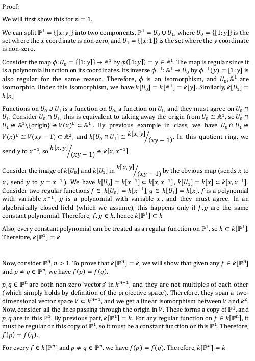
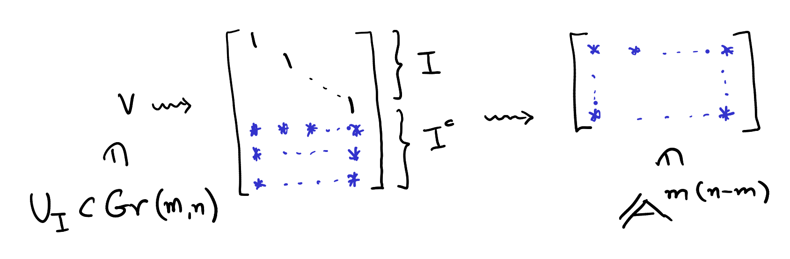
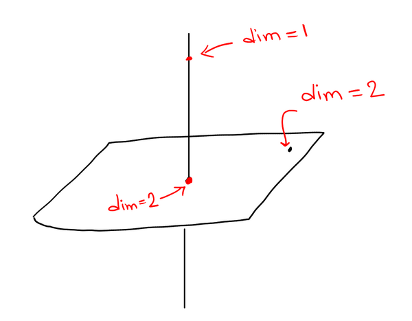

Algebraic geometry (Notes)
PDF Version
If the LaTeX in the web version seems off, use the PDF version.
1. Affine algebraic sets week1 week2 done
1.1. Affine space week1
The objects of study in algebraic geometry are called algebraic varieties. The building blocks for general algebraic varieties are certain subsets of the affine space. Let us first recall affine space.
Let \(k\) be a field and let \(n\) be a non-negative integer. The affine \(n\)-space over \(k\), denoted by \(\mathbb A^n_k\) is the set of \(n\)-tuples \(a_1,\dots, a_n\) whose entries \(a_i\) lie in \(k\). Thus, \(\mathbb A^n_k\) is nothing but the product \(k^n\). The product \(k^n\) has quite a bit of extra structure—it is a \(k\)-vector space, for example—but we wish to forget it. That is the reason for choosing different notation. In particular, the zero tuple does not play a distinguished role.
1.2. Affine algebraic set week1
Let \(k[x_1,\dots,x_n]\) denote the ring of polynomials in variables \(x_1, \dots, x_n\) and coefficients in \(k\). An affine algebraic subset of the affine space \(\mathbb A^n_k\) is the common zero locus of a set of polynomials. More precisely, a set \(S \subset \mathbb A^n_k\) is an affine algebraic subset if there exists a set of polysomials \(A \subset k[x_1,\dots,x_n]\) such that \[ S = \{a \in \mathbb A^n_k \mid f(a) = 0 \text{ for all } f \in A\}.\]
1.2.1. Definition (Vanishing locus)
Given \(A \subset k[x_1,\dots,x_n]\), the vanishing locus of \(A\), denoted by \(V(A)\) is the set \[ V(A) = \{a \in \mathbb A^n_k \mid f(a) = 0 \text{ for all } f \in A\}.\]
---
Thus the affine algebraic sets are precisely the sets of the form \(V(A)\) for some \(A\).
1.2.2. Examples/non-examples
The following are affine algebraic sets
- The empty set
- Entire affine space
- Single point
Done in class.
The following are not affine algebraic sets
- The unit cube in \(\mathbb A^n_{{\mathbb R}}\)
- Points with rational coordinates in \(\mathbb A^n_{{\mathbb C}}\)
DIY.
1.3. Ideals week1
Let \(R\) be a ring. Recall that a subset \(I \subset R\) is an ideal if it is closed under addition and multiplication by elements of \(R\). Given any subset \(A \subset R\) the ideal generated by \(A\), denoted by \(\langle A \rangle\) is the smallest ideal containing \(A\). This ideal consists of all elements \(r\) of \(R\) that can be written as a linear combination \[ r = a_1 r_1 + \cdots + a_m r_m,\] where \(a_i \in A\) and \(r_i \in R\).
1.3.1. Proposition
Let \(A \subset k[x_1,\dots,x_n]\). Then we have \(V(A) = V(\langle A \rangle)\).
Done in class.
1.4. Noetherian rings and the Hilbert basis theorem week1
In our definition of \(V(A)\), the subset \(A\) may be infinite. But it turns out that we can replace it by a finite one without changing \(V(A)\). This is a consequence of the Hilbert basis theorem, which, in turn, has to do with a fundamental property of rings.
We begin with a simple observation.
1.4.1. Proposition
1.4.2. Definition (Noetherian ring)
A ring \(R\) satisfying the equivalent conditions of Proposition 1.4.1 is called Noetherian.
1.4.3. Examples/non-examples
The following rings are Noetherian
- \(R = {\mathbb Z}\)
- \(R\) a field.
All ideals here can be generated by 1 element.
The ring of continuous functions on the interval is not Noetherian. #+beginproof. Let \(I_n\) be the set of functions on \([0,1]\) that vanish on \([0,1/n]\). This forms an increasing chain of ideals that does not stabilise. #+endproof
1.4.4. Proposition (Quotients of Noetherian rings)
If \(R\) is Noetherian and \(I \subset R\) is any ideal, then \(R/I\) is Noetherian.
Proof. — 2
1.4.5. Theorem
If \(R\) is Noetherian, then so is \(R[x]\)
- Proof
Assume \(R\) is Noetherian, and let \(I \subset R[x]\) be an ideal. We must show that \(I\) is finitely generated. The basic idea is to use the division algorithm, while keeping track of the ideals formed by the leading coefficients.
For every non-negative integer \(m\), define
\begin{align*} J_m &= \{{\rm Leading\ coeff} (f) \mid f \in I, f \neq 0, \quad \deg(f) \leq m\} \cup \{0\} \end{align*}We make the following claims.
- \(J_m\) is an ideal of \(R\).
- \(J_m \subset J_{m+1}\).
DIY.
Since \(R\) is Noetherian, the chain \(J_1 \subset J_2 \subset \cdots\) stabilises; say \(J_m = J_{m+1} = \cdots\). Let \(S_i\) be a finite set of generators for \(J_i\), and for \(a \in S_i\), let \(p_a \in I\) be a non-zero element of degree at most \(i\) whose leading coefficient is \(a\). We claim that the (finite) set \(\{p_a \mid a \in S_1 \cup \cdots \cup S_m\}\) generates \(I\).
Let \(G = \{p_a \mid a \in S_1 \cup \cdots \cup S_m\}\). By construction, this is a subset of \(I\), so the ideal it generates is contained in \(I\). We remains to prove that every \(f \in I\) is a linear combination of elements of \(G\). It will be convenient to set \(S_n = S_m\) for all \(n \geq m\).
We induct on the degree of \(f\) (leaving the base case to you). Suppose the degree of \(f\) is \(n\) and the statement is true for elements of degree less than \(n\). By construction, the leading coefficient of \(f\) is an \(R\)-linear combination of elements of \(S_n\), say \[ {\rm LC}(f) = \sum c_i s_i.\] Let \(n_i\) be the degree of \(p_{s_i}\); then by construction \(n_i \leq n\). Consider the linear combination \(g = \sum c_i p_{s_i} x^{n-n_i}\). See that \(g\) lies in \(I\), has degree \(n\), the same leading coefficient as \(f\), and is an \(R[x]\)-linear combination of elements of \(G\). So \(f-g \in I\) has lower degree. By inductive hypothesis, \(f-g\) is an \(R[x]\)-linear combination of elements of \(G\), and hence so is \(f\).
1.4.6. Corollary (Hilbert basis theorem)
\(k[x_1,\dots,x_n]\) is Noetherian.
Induct on \(n\).
1.4.7. Corollary
Every affine algebraic subset of \(\mathbb A^n_k\) is the vanishing set of a finite set of polynomials.
Done in class.
1.5. The Zariski topology week2
The notion of affine algebraic sets allows us to define a topology on \(\mathbb A^n_k\). Recall that we can specify a topology on a set by specifying what the open subsets are, or equivalently, what the closed subsets are. In our case, it is more convenient to do the latter. The collection of closed subsets must satisfy the following properties.
- The empty set and the entire set are closed.
- Arbitrary intersections of closed sets are closed.
Finite unions of closed sets are closed.
We define the Zariski topology on \(\mathbb A^n_k\) by setting the closed subsets to be the affine algebraic sets, namely, the sets of the form \(V(A)\) for some \(A \subset k[x_1,\dots,x_n]\).
1.5.1. Proposition
The collection of affine algebraic subsets satisfies the three conditions above.
\noindent \textbf{The empty set and the entire set are closed.}
\begin{align*} \emptyset &= \{\mathbf{a} \in \mathbb{A}_k^n : 1 = 0\} \\ &= V(\{1\}) \end{align*}So the empty set is closed.
\begin{align*} \mathbb{A}_k^n &= \{\mathbf{a} \in \mathbb{A}_k^n : 0 = 0\} \\ &= V(\{0\}) \end{align*}So the entire set is closed.
\medskip \noindent \textbf{Arbitrary intersections of closed sets are closed.} \smallskip
Let \(\{V(A_\alpha)\}\) be a collection of closed sets.
\begin{align*} \bigcap_{\alpha}V(A_\alpha) &= \bigcap_{\alpha}\{\mathbf{a} \in \mathbb{A}_k^n : p(\mathbf{a}) = 0 \text{ for all } p \in A_\alpha\} \\ &= \{\mathbf{a} \in \mathbb{A}_k^n : p(\mathbf{a}) = 0 \text{ for all } p \in \bigcup_{\alpha}A_\alpha\} \\ &= V\left(\bigcup_{\alpha}A_\alpha\right) \end{align*}So arbitrary intersections of closed sets are closed.
\medskip \noindent \textbf{Finite unions of closed sets are closed.} \smallskip
Let \(V(A), V(B)\) be closed sets. Let \(\mathbf{a} \in V(A)\cup V(B)\). Then \(p(\mathbf{a}) = 0 \text{ for all } p \in A\) or \(q(\mathbf{a}) = 0 \text{ for all } q \in B\). Without loss of generality, suppose \(p(\mathbf{a}) = 0 \text{ for all } p \in A\). Then for all polynomials \(pq\) with \(p \in A, q \in B\), \(pq(\mathbf{a}) = 0\). So \(\mathbf{a} \in V(\{pq : p \in A, q \in B\})\) and therefore \(V(A)\cup V(B) \subseteq V(\{pq : p \in A, q \in B\})\). Now suppose \(\mathbf{a} \notin V(A)\cup V(B)\). Then there exists some \(p \in A, q \in B\) such that \(pq(\mathbf{a}) \ne 0\). So \(\mathbf{a} \notin V(\{pq : p \in A, q \in B\})\) and therefore \(V(\{pq : p \in A, q \in B\}) \subseteq V(A)\cup V(B)\).
So \(V(A) \cup V(B) = V(\{pq : p \in A, q \in B\})\) and therefore \(V(A) \cup V(B)\) is closed. Following this process with an inductive argument, finite unions of closed sets are closed.
1.5.2. Proposition
The Zariski topology on \(\mathbb A^1_k\) is the finite complement topology. The only closed sets are the finite sets (or the whole space). In other words, the only open sets are the complements of finite sets (or the empty set).
We saw that the subsets \(V(A) \subset \mathbb A^1_k\) are either the whole \(\mathbb A^1_k\) or finite sets.
1.5.3. Comparison between Zariski and Euclidean topology over \(\mathbb C\).
Every Zariski closed (open) subset of \(\mathbb A^n_{\mathbb C}\) is also closed (open) in the usual Euclidean topology. The converse is not true.
It suffices to prove that \(V(A)\) is closed in the usual topology. We have \(V(A) = \cap_{f \in A} V(f)\), so it suffices to show that \(V(f)\) is closed. But \(V(f) = f^{-1}(0)\) is closed, because it is the pre-image of a closed set under a continuous function.
1.5.4. Proposition (Polynomials are continuous)
Let \(f\) be a polynomial function on \(\mathbb A^n_k\), viewed as a map \(f \colon \mathbb A^n_k \to \mathbb A^1_k\). Then \(f\) is continuous in the Zariski topology.
We check that pre-images of closed sets are closed. The only closed sets of \(\mathbb A^1_k\) is the whole space and finite sets. The pre-image of \(\mathbb A^1_k\) is \(\mathbb A^n_k\), which is closed. Since finite unions of closed sets are closed, it suffices to check that the pre-image of a point \(a \in \mathbb A^1_k\) is closed. But the pre-image of \(a\) under \(f\) is just \(V(f-a)\), which is closed by definition.
---
The Zariski topology has very few open sets, and as a result has terrible separation properties. It is not even Hausdorff (except in very small examples). Nevertheless, we will see that it is extremely useful. For one, it makes sense over every field!
1.6. The Nullstellensatz week2
We associated a set \(V(A)\) to a subset \(A\) of the polynomial ring \(k[x_1,\dots,x_n]\). If we think of \(A\) as a system of equations \(\{f = 0 \mid f \in A\}\), then \(V(A)\) is the set of solutions. We can also define a reverse operation. The Nullstellensatz says that if \(k\) is algebraically closed, then these two operations are mutually inverse. That is, the data of a system of equations is equivalent to the data of its set of solutions. This pleasant fact allows us go back and forth between algebra (equations) and geometry (the solution set).
We start with a straightforward definition.
1.6.1. Definition (Ideal vanishing on a set)
Let \(S \subset \mathbb A^n_k\) be a set. The ideal vanishing on \(S\), denoted by \(I(S)\), is the set \[ I(S) = \{f \in k[x_1,\dots,x_n] \mid f(a) = 0 \text{ for all } a \in S\}\]
---
Recall that an ideal \(I \subset k[x_1,\dots,x_n]\) is radical if it has the property that whenever \(f^n \in I\) for some \(n > 1\), then \(f \in I\).
1.6.2. Proposition
The set \(I(S)\) is a radical ideal of \(k[x_1,\dots,x_n]\).
We leave it to you to check that \(I(S)\) is an ideal. To see that it is radical, see that if \(f^n\) vanishes on \(S\), then so does \(f\).
1.6.3. Proposition (Easy properties of radical ideals)
- \(I \subset R\) is radical if and only if \(R/I\) has no (non-zero) nilpotents.
- All prime ideals are radical. In particular, all maximal ideals are radical.
Consider \(f \in R\) and its image \(\overline f \in R/I\). Then \(\overline f\) is a nilpotent of \(R/I\) if and only if \(f^n \in I\) and \(\overline f = 0\) in \(R/I\) if and only if \(f \in I\). From this, the result follows. If \(I\) is prime, then \(R/I\) is an integral domain, so it has no nilpotents (it does not even have zero divisors).
1.6.4. Proposition (Radical of an ideal)
Let \(I\) be an ideal, and set \(\sqrt I = \{f \mid f^n \in I \text{ for some } n > 0\}.\) Then \(\sqrt I\) is a radical ideal.
(Assume a commutative ring) We will first show that \(\sqrt I \subset R\) is an ideal. Let \(f \in \sqrt I, r \in R\), and by definition of \(\sqrt I\), we suppose \(f^n \in I\) for some \(n > 0\) \[ (rf)^n = r^nf^n.\] Since \(r^n \in R, f^n \in I\), by definition of ideal, we have \(r^nf^n \in I\). Therefore, \((rf)^n \in I\) for some \(n > 0\), and by definition, we have \(rf \in \sqrt I\). Therefore, \(\sqrt I\) is closed under multiplication by elements of \(R\).
Let \(f, g \in \sqrt I\), with \(f^n \in I\), \(g^m \in I\).
\begin{align*} (f+g)^{m+n} &= c_0 f^{m+n} + c_1 f^{m+n-1}g^1 + \dots + c_m f^ng^m + \cdots + c_{m+n} g^{m+n} \\ &= c_0 f^m \times f^n + c_1 f^{m-1}g \times f^n + \dots + c_m f^n g^m \\ & \qquad + c_{m+1} f^{n-1}g^1 \times g^m + \dots + c_{m+n} g^n \times g^m. \end{align*}(\(c_i\) are the corresponding binomial coefficients in \(I\)). As shown above, \((f+g)^{m+n}\) can be written as an \(R\)-linear combination of \(f^n\) and \(g^m\). Since \(f^n \in I, g^m \in I\), by definition of ideal, we have \((f+g)^{m+n} \in I\). Therefore, by definition we have \((f+g) \in \sqrt I\) and \(\sqrt I\) is closed under addition. Therefore, \(\sqrt I\) is an ideal.
Now we need to show that \(\sqrt I\) is a radical ideal. Suppose \(f \in R\) with \(f^n \in \sqrt I\) for some \(n > 0\). Then, by definition of \(\sqrt I\), we have \((f^n)^m \in I\) for some \(m > 0\). \[ (f^n)^m = f^{nm} \in I, nm > 0.\] Therefore, by definition, we have \(f \in \sqrt I\).
1.6.5. Definition (Radical of an ideal)
The ideal \(\sqrt I\) is called the radical of \(I\).
1.6.6. Proposition (V is unchanged by radicals)
We have \(V(I) = V(\sqrt I)\).
\(\boxed{\supset}\) Note that \(I \subset \sqrt{I}\) and hence \(V(\sqrt{I}) \subset V(I)\). More specifically, for any \(f \in I\) we have that \(f^1 \in I\) and so \(f \in \sqrt{I}\). Now suppose \(a \in V(\sqrt{I})\). Then \(f(a) = 0\) for all \(f \in \sqrt{I}\). But since \(I \subset \sqrt{I}\), this implies the weaker statement that for all \(f \in I\), we have \(f(a) = 0\). This is the same as saying that \(a \in V(I)\).
\(\boxed{\subset}\) Now let \(a \in V(I)\). Then let \(f \in \sqrt{I}\). By definition of \(\sqrt{I}\) there exists some \(n>0\) such that \(f^n \in I\) and hence \(f^n(a) = 0\) by assumption. We want to show that this implies \(f(a) = 0\) which gives us that \(a \in V(\sqrt{I})\), completing the proof. This is because \(f\) is an arbitrary element of \(\sqrt{I}\). We are done if \(n=1\).
Otherwise we use that we are working in a field which has no zero divisors. More specifically, \(f^n(a) = f(a)f^{n-1}(a) = 0\) implies that either \(f(a) = 0\) or \(f^{n-1}(a) = 0\). If \(f(a) = 0\) we are done. Otherwise if \(f^{n-1}(a) = 0\), we repeat the previous step for \(f^{n-1}(a) = f(a)f^{n-2}(a) = 0\) and so on, until we get \(f(a) = 0\) or until \(n=2\) in which case we have \(f^2(a) = f(a)f(a) = 0\) which implies \(f(a) = 0\) as well.
---
We now state a string of important theorems, all called the “Nullstellensatz”, starting with the most comprehensive one.
1.6.7. Theorem
Let \(k\) be an algebraically closed field. Then we have a bijection \[ \text{Radical ideals of \(k[x_1, \dots, x_n]\)} \leftrightarrow \text{Zariski closed subsets of \(\mathbb A^n_k\)}\] where the map from the left to the right is \(I \mapsto V(I)\) and the map from the right to the left is \(S \mapsto I(S)\). The correspondence is inclusion reversing.
1.6.8. Theorem
1.6.9. Theorem
---
Theorem 1.6.8 says that we have a dichotomy: either a system of equations \(f_i = 0\) has a solution, or there exist polynomials \(g_i\) such that \[ \sum f_i g_i = 1.\]
1.7. Proof of the Nullstellensatz week2
The proof of Theorem 1.6.7 actually goes via the proofs of the subsequent theorems. We use the following result from algebra, whose proof we skip.
1.7.1. Theorem
1.7.2. Proof of Theorem 1.6.9
Let \(m \subset k[x_1,\dots,x_n]\) be a maximal ideal. Taking \(K = k\) and \(L = k[x_1,\dots,x_n]/m\) in Theorem 1.7.1, and using that \(k\) is algebraically closed, we get that the natural map \(k \to k[x_1,\dots,x_n]/m\) is an isomorphism. Let \(a_i \in k\) be the pre-image of \(x_i\) under this isomorphism. Then we have \(m = (x_1-a_1,\dots,x_n-a_n)\).
Since \(m\) is a maximal ideal, \(L := k[x_1, ..., x_n] / m\) is a field. Let \(\pi : k[x_1, ..., x_n] \to L\) be the projection map. Consider the inclusion map \(\mathfrak{i} : k \to k[x_1, ..., x_n]\). We embed \(k\) in \(L\) via the map \(\phi := \pi \circ \mathfrak{i}\). We now show that \(\phi\) is an ismomorphism.
\paragraph{Surjectivity of $\phi$}. The existence of this map tells us that \(L\) is a \(k\) algebra. Moreover, \(L\) is a finitely generated \(k\) algebra, since \(L\) is generated by \(\{ \pi(x_1), ..., \pi(x_n)\}\). Now Theorem 1.7.1 applies, and we deduce that \(L\) is a finite extension of \(k\). In particular, \(L\) must be an algebraic extension of \(k\). If \(L\) were not an algebraic extension of \(k\), then there would exist an element \(l \in L\) transcendental over \(k\); but then \(L\) could not be a finite extension of \(K\), because the set \(\{ l^{j} \}_{j = 0, 1, 2, ...}\) would be linearly independent. We conclude that \(L\) is an algebraic extension of \(k\).
We know that given any \(l \in L\), there is a polynomial \(p(y) \in k[y]\), where \(y\) is any new variable, such that \(p(l) = 0\). Let \(p(y)\) be the monic polynomial of least degree satisfying the above. Then \(p(y)\) is irreducible, since otherwise it would have a factor of smaller degree also satisfying the above, contradicting the minimality of the degree of \(p(y)\). Since \(k\) is algebraically closed, the irreducible monic polynomials are all of the form \(x - a\), for \(a \in k\). As such, we have \(p(y) = y - a\) for some \(a \in k\). It follows that \(l \in k\), since we must have \(l = a\). To be precise, what we have really shown is that \(l \in \phi(k)\), since \(k\) is not itself a subset of \(L\), but can be identified with a subset of \(L\). We conclude that \(L = \phi(k)\). This tells us that \(\phi\) is surjective.
\paragraph{Injectivity of $\phi$}. Because \(\phi\) is a field homomorphism, \(\phi\) must be injective. Indeed, the kernel of \(\phi\) is an ideal of \(k\). As such, the kernel of \(\phi\) is either the zero ideal or the unit ideal. Since \(\phi\) is not identically zero, the kernel must be the zero ideal. This completes the proof that \(\phi\) is an isomorphism.
\paragraph{Completion of Proof} Because \(\phi : k \to L\) is an isomorphism, we can define \(a_i := \phi^{-1}(\pi(x_i))\), for each \(i = 1, ..., n\). We claim that with this choice of \(a_1, .., a_n \in k\), the equation in \eqref{2} holds. If \(p \in (x_1 - a_1, ..., x_n - a_n)\), then there exist \(q_i \in k[x_1, ..., x_n]\) such that
\begin{equation} \label{2} p = \sum_{i = 1}^{n} q_i (x_i - \mathfrak{i}(a_i)). \end{equation}We could remove the \(\mathfrak{i}\) in \eqref{2}; it just serves as a reminder that \(k[x_1, ..., x_n]\) contains a copy of \(k\), not \(k\) itself. From \eqref{2}, we obtain
\begin{equation} \label{3} \pi(p) = \sum_{i = 1}^{n} \pi(q_i) (\pi(x_i) - \phi(a_i)) = 0. \end{equation}The first equality in \eqref{2} holds by the fact that \(\pi\) is a ring homomorphism, and the second equality holds because \(\phi(a_i) = \pi(x_i)\), for \(i = 1, ..., n\). From \eqref{3} we conclude that \(p \in m\), since the kernel of \(\pi\) is precisely the ideal \(m\). We have shown that
\begin{equation} \label{4} (x_1 - a_1, ..., x_n - a_n) \subseteq m. \end{equation}Now suppose that \(p \in m\). Then \(\pi(p) = 0\). On the other hand, we can write
\begin{equation} \label{5} p = \sum_{i = 0}^{d} \sum_{j_1 + ... + j_n = i} \mathfrak{i}(c_{j_1, ..., j_n}) x_{1}^{j_1} ... x_{n}^{j_n}, \end{equation}where \(d\) is the degree of \(p\) and the \(c_{j_1, ..., j_n}\) are elements of \(k\). Equation \eqref{5} yields
\begin{equation}\label{6} \begin{split} \pi(p) &= \sum_{i = 0}^{d} \sum_{j_1 + ... + j_n = i} \phi(c_{j_1, ..., j_n}) \pi(x_{1})^{j_1} ... \pi(x_n)^{j_n} \\ &= \sum_{i = 0}^{d} \sum_{j_1 + ... + j_n = i} \phi(c_{j_1, ..., j_n}) \phi(a_1)^{j_1} ... \phi(a_n)^{j_n} \\ &= \phi\bigg{(} \sum_{i = 0}^{d} \sum_{j_1 + ... + j_n = i} c_{j_1, ..., j_n} a_{1}^{j_1} ... a_{n}^{j_n} \bigg{)}. \end{split} \end{equation}The second equality in \eqref{6} holds by the definition of \(a_1, ..., a_n\), and the third equality holds because \(\phi\) is a ring homomorphism. From \eqref{6} and the fact that \(\pi(p) = 0\), we have that \(\phi\) maps \(\sum_{i = 0}^{d} \sum_{j_1 + ... + j_n = i} c_{j_1, ..., j_n} a_{1}^{j_1} ... a_{n}^{j_n}\) to zero. Since \(\phi\) is an isomorphism, it follows that
\begin{equation} \label{7} \sum_{i = 0}^{d} \sum_{j_1 + ... + j_n = i} c_{j_1, ..., j_n} a_{1}^{j_1} ... a_{n}^{j_n} = 0, \hspace{1em} \textrm{ in the field } k. \end{equation}From \eqref{7}, we have that the point \((a_1, ..., a_n)\) is a root of the polynomial \(p\). We can write
\begin{equation} \label{8} p = \sum_{i = 0}^{d} \sum_{j_1 + ... + j_n = i} \mathfrak{i}(e_{j_1, ..., j_n}) (x_1 - a_1)^{j_1} ... (x_n - a_n)^{j_n}, \end{equation}for suitably chosen \(e_{j_1, ..., j_n} \in k\). For example, we could define
\begin{equation} \label{9} q(x_1, ..., x_n) = p(x_1 + a_1, ..., x_n + a_1). \end{equation}We think of the right-hand side of \eqref{9} as a polynomial in \(x_1, ..., x_n\). “Evaluating” \(q\) at \((x_1 - a_1, ..., x_n - a_n)\) gives back \(p\), by definition, while the right-hand side of \eqref{9} becomes a polynomial in the variables \(x_1 - a_1, ..., x_n - a_n\). This is one way to show that \(p\) can be written in the form \eqref{8}. Now, the term with \(i = 0\) in \eqref{8} is the constant term \(e_{0, ..., 0}\). Evaluating \(p\) at \((a_1, ..., a_n)\) in \eqref{8} shows that \(p(a_1, ..., a_n) = e_{{0, ..., 0}}\). By \eqref{7}, we have \(p(a_1, ..., a_n) = 0\), so the constant term \(e_{{0, ..., 0}}\) must also be zero. This means that every term in \eqref{8} belongs to \((x_1 - a_1, ..., x_n - a_n)\). It follows that \(p \in (x_1 - a_1, ..., x_n - a_n)\). We have shown that
\begin{equation} \label{10} m \subseteq (x_1 - a_1, ..., x_n - a_n). \end{equation}From \eqref{4} and \eqref{10}, we conclude that \eqref{2} holds. This completes the proof.
1.7.3. Proof of Theorem 1.6.8
Suppose \(I\) is not the unit ideal. We show that \(V(I)\) is non-empty. To do so, we use that every proper ideal is contained in a maximal ideal.
Suppose \(I\) is not the unit ideal.
We show that \(V(I)\) is non-empty.
To do so, we use that every proper ideal is contained in a maximal ideal.
So, as \(I\) is proper, it is contained in some maximal ideal \(M\).
But \[ I \subset M \implies V(M) \subset V(I) .\]
But by theorem 1.6.9, \[ M = \langle x_1 - a_1, \ldots, x_n - a_n \rangle ,\] where \(a_i \in l\) is the preimage of \(x_i\) under the isomoprhism of the natural map \(k \to k [x_1, \ldots, x_n] / M\), for each \(i\).
So \(V(M) = \{ (a_1, \ldots, a_n) \}\).
Thus, \(\varnothing \neq V(M) \subset V(I)\), i.e. \(V(I)\) is non-empty. The contrapositive completes the proof.
1.7.4. Proof of Theorem 1.6.10
We consider the system \(g = 0\) for \(g \in I\) and \(f \neq 0\). Notice that the last one is not an equation, but there is a trick that allows us to convert it into an equation. Let \(y\) be a new variable, and consider the polynomial ring \(k[x_1,\dots,x_n,y]\). In the bigger ring, consider the system of equations \(g = 0\) for \(g \in I\) and \(yf - 1 = 0\). By our assumption, this system of equations has no solutions.
Why is this? Solutions to the original and augmented system are in bijection; if \((a_1,...,a_n)\) satisfies \(g=0\) and \(f\neq 0\), then there exists a unique value of \(y\), \(\frac{1}{f(a_1,...,a_n)}\), such that the second system is solved. Similarly, a solution to the second system constitutes a solution to the first, by simply ignoring the value of y, because if \(yf-1=0\) then \(f\) must be non-zero. Then, by assumption of Theorem 1.6.10, \(f\) is identically zero in \(V(I)\), so the original system has no solutions. Therefore the augmented system has no solutions, and by Theorem 1.6.8, the ideal generated by \(g\in I\) and \(yf-1\) is the unit ideal in \(k[x_1,...x_n,y]\). So then we can write \[ 1 = \sum c_i(x_1,...,x_n,y) g_i(x1,...,x_n,y) + c(x_1,...x_n,y) (yf-1) \] We transform this expression in \(k[x_1,...x_n,y]\) to an expression in the fraction field \(k(x_1,...x_n)\) by setting \(y = \frac{1}{f(x_1,...,x_n)}\), and since for this choice of \(y\) we have that \(yf-1\) vanishes, we get \[ 1 = \sum c_i(x_1,...,x_n, \frac{1}{f(x_1,...,x_n)}) g_i(x1,...,x_n,y) \in k(x_1,...x_n) \] Now, since this is a polynomial in \(\frac{1}{f(x_1,...,x_n)}\), multiplying through by a sufficiently large power \(N\) of \(f\) gives \[ f^N = \sum p_i(x_1,...,x_n) g_i(x1,...,x_n,y) \in k[x_1,...x_n] \] So we can conclude that \(f^N\) is in I.
1.7.5. Proof of Theorem 1.6.7.
We show that the maps \(I \to V(I)\) and \(S \to I(S)\) are mutual inverses. That is, we show that \(I(V(I)) = I\) if \(I\) is a radical ideal, and \(V(I(S)) = S\) if \(S\) is a Zariski closed subset of \(\mathbb A^n_k\).
Let us first show that for any ideal \(I\), we have \(I(V(I)) = \sqrt I\). Suppose \(f \in \sqrt I\), then \(f^n \in I\) for some \(n > 0\). But then \(f^n\) is identically zero on \(V(I)\), and hence so is \(f\); that is, \(f \in I(V(I))\). It remains to show that \(I(V(I)) \subset \sqrt I\). Let \(f \in I(V(I))\). Then \(f\) is identically zero on \(V(I)\). By 1.6.10, there is some \(n\) such that \(f^n \in I\), and hence \(f \in \sqrt I\).
Let us now show that \(V(I(S)) = S\). Since \(S\) is Zariski closed, we know that \(S = V(J)\) for some ideal \(J\). So \(I(S) = I(V(J)) = \sqrt{J}.\) But we know that \(V(J) = V(\sqrt{J})\), and hence \(V(I(S)) = S\). The proof of Theorem 1.6.7 is then complete.
1.8. Affine and quasi-affine varieties week2
An affine variety is a subset of the affine space that is closed in the Zariski topology. A quasi-affine variety is a subset of the affine space that is locally closed in the Zariski topology. (A locally closed subset of a topological space is a set that can be expressed as an intersection of an open set and a closed set).
2. Regular functions and maps 1 week3 done
Throughout this section, \(k\) is an algebraically closed field.
2.1. Regular functions week3
Let \(S \subset \mathbb A^n\) be a set and let \(f \colon S \to k\) be a function. Let \(a\) be a point of \(S\).
2.1.1. Definition (Regular function)
We say that \(f\) is regular (or algebraic) at \(a\) if there exists a Zariski open set \(U \subset \mathbb A^n\) and polynomials \(p, q \in k[x_1,\dots,x_n]\) with \(q(a) \neq 0\) such that \[ f \equiv p/q \text{ on } S \cap U.\] We say that \(f\) is regular if it is regular at all points of \(S\).
In other words, \(f\) is regular at a point \(a\) if locally around \(a\) (in the Zariski topology), \(f\) can be expessed as a ratio of two polynomials. Although the definition of a regular function makes sense for \(S \subset \mathbb A^n\), we use it only in the context of quasi-affine varieties.
2.1.2. Examples
- A constant function is regular.
- Every polynomial function is regular.
- Sums and products of regular functions are regular. So, the set of regular functions forms a ring. This ring contains a copy of \(k\), namely the constant functions.
2.1.3. Definition (Ring of regular functions)
We denote the ring of regular functions on \(S\) by \(k[S]\). This ring is a \(k\)-algebra.
2.1.4. Proposition (Local nature of regularity)
Let \(f\) be a function on \(S\), and let \(\{U_i\}\) be an open cover of \(S\). If the restriction of \(f\) to each \(U_i\) is regular, then \(f\) is regular.
Let \(a \in S\). Then, since \(\{U_i\}\) is an open cover of \(S\), there exists an open set \(U \in \{U_i\}\) such that \(a \in U\). Since the restriction of \(f\) to \(U\) is regular, it must in particular be regular at \(a\). Thus, there exists an open set \(V\) containing the point \(a\) such that \[ f \equiv p/q \text{ on } V \cap U \] for some polynomials \(p,q \in k[x_1, \ldots, x_n]\). Then, taking \(V' = V \cap U\), which is an open set in \(S\), we have that \[ f \equiv p/q \text{ on } V' \cap S \] Therefore, \(f\) is regular at \(a\). Since \(a\) was chosen arbitrarily in \(S\), it follows that \(f\) is regular.
2.2. Regular functions on an affine variety week3
It turns out that regular functions on closed subsets of \(\mathbb A^n\) are just the polynomial functions! So, not only is there a global algebraic expression, we don’t even need denominators.
2.2.1. Proposition
Let \(X \subset \mathbb A^n\) be a Zariski closed subset. Let \(f\) be a regular function on \(X\). Then there exists a polynomial \(P \in k[x_1,\dots,x_n]\) such that \(P(x) = f(x)\) for all \(x \in X\).
By definition, we know that for every \(x \in X\), there is a Zariski open set \(U \subset X\) and polynomials \(p, q\) such that \(f = p/q\) on \(U\). The set \(U\) and the polynomials \(p, q\) may depend on \(x\), so let us denote them by \(U_x\), \(p_x\), and \(q_x\). We need to combine all of these \(p\)’s and \(q\)’s and construct a single polynomial \(P\) that agrees with \(f\) for all \(x\).
This is done by a “partition of unity” argument. First, let us do some preparation. We know that \(p_x / q_x = f\) on \(U_x\), but we know nothing about \(p_x\) and \(q_x\) on the complement of \(U_x\). Our first step is a small trick that lets us assume that both \(p_x\) and \(q_x\) are identically zero on the complement of \(U_x\).
Since \(U_x \subset X\) is open, its complement is closed. By the definition of the Zariski topology, this means that \[X \setminus U_x = X \cap V(A),\] for some \(A \subset k[x_1,\dots, x_n]\). Since \(x \in U_x\), at least one of the polynomials in \(A\) must be non-zero at \(x\). Let \(g\) be such a polynomial, and set \(U'_x = X \cap \{g \neq 0\}\). Then \(U'_x \subset U_x\) is a possibly smaller open set containing \(x\). Set \(p'_x = p_x \cdot g\) and \(q'_x = q_x \cdot g\). Then we have \(f = p'_x/q'_x\) on \(U'_x\), and we also have \(p'_x \equiv q'_x \equiv 0 \) on \(X \setminus U'_x\). So, we may assume from the beginning that both \(p_x\) and \(q_x\) are identically zero on the complement of \(U_x\)..
Now comes the crux of the argument. Suppose \(X = V(I)\). Consider the set of “denominators” \(\{q_x \mid x \in X\}\). Note that the system of equations \[ g = 0 \text{ for all } g \in I \text{ and } q_x = 0 \text{ for all } x \in X\] has no solution!
Why is this the case? \(\{q_x=0 \text{ for all } x\in X\}\subseteq X^c\) because for any \(x\in X\), there exists a \(q_x\) such that \(q_x(x)\ne0\), by definition of the \(q_x\)’s. Since \(\{g=0 \text{ for all } g\in I\}=V(I)=X\), the system of equations has no solutions.
By the Nullstellensatz, this means that the ideal \(I + \langle q_x \mid q \in X \rangle\) is the unit ideal. That is, we can write \[ 1 = g + r_1q_{x_1} + \dots + r_m q_{x_m}\] for some polynomials \(r_1, \dots, r_m\). Take \(P = r_1p_{x_1} + \dots + r_m p_{x_m}\). Then \(f = P\) on all of \(X\).
Why is this the case? We have that \(X = U_{x_{1}} \cup \dots \cup U_{x_{m}}\), i.e. \(X\) is the union of finitely many \(U_{x_{i}}\)’s. Let \(x \in X\) and assume \(x\) is in only some of these \(U_{x_{i}}\)’s. Without loss of generality, assume \(x \in U_{x_{1}}, \dots, U_{x_{j}}\) and \(x \notin U_{x_{j + 1}}, \dots, U_{x_{m}}\). Then on \(U_{x_{1}} \cap \dots \cap U_{x_{j}}\), we have \(\displaystyle f(x) = \frac{p_{x_{1}}(x)}{q_{x_{1}}(x)} = \dots = \frac{p_{x_{j}}(x)}{q_{x_{j}}(x)}\). Also, \(1 = r_{1}(x)q_{x_{1}}(x) + \dots r_{j}(x)q_{x_{j}}(x)\) and \(P(x) = r_{1}(x)p_{x_{1}}(x) + \dots + r_{j}(x)p_{x_{j}}(x)\).
But for all \(i \in \{1, \dots, j\}\) and \(\lambda_{i} \in k[x_{1}, \dots, x_{n}]\) with at least one \(\lambda_{i} \neq 0\) \[\displaystyle \frac{\sum_{i = 1}^{j} \lambda_{i}(x) p_{x_{i}}(x)}{\sum_{i = 1}^{j} \lambda_{i}(x) q_{x_{i}}(x)} = \frac{p_{x_{i}}(x)}{q_{x_{i}}(x)} = f(x).\] More specifically, \(\displaystyle P(x) = \frac{P(x)}{1} = \frac{\sum_{i = 1}^{j} r_{i}(x)p_{x_{i}}(x)}{\sum_{i = 1}^{j} r_{i}(x)q_{x_{i}}(x)} = f(x)\). Therefore, \(f = P\) on all of \(X\).
----
Let \(X \subset \mathbb A^n\) be any subset. We have a ring homomorphism \[ \pi \colon k[x_1,\dots,x_n] \to k[X],\] where a polynomial \(f\) is sent to the regular function it defines on \(X\).
2.2.2. Proposition (Ring of regular functions of an affine)
Let \(X \subset \mathbb A^n\) be a closed subset. Then the ring homomorphism \(\pi \colon k[x_1,\dots,x_n] \to k[X]\) induces an isomorphism \[ k[x_1,\dots,x_n]/I(X) \xrightarrow{\sim} k[X].\]
The map \(\pi\) is surjective by Proposition 2.2.1 and its kernel is \(I(X)\) by definition. The result follows by the isomorphism theorems.
2.3. Regular maps week3
Consider \(X \subset \mathbb A^n\) and \(Y \subset \mathbb A^m\) and a function \(f \colon X \to Y\). Write \(f\) in coordinates as \[ f = (f_1, \dots, f_m).\]
2.3.1. Definition (Regular map)
We say that \(f\) is regular at a point \(a \in X\) if all its coordinate functions \(f_1, \dots, f_m\) are regular at \(a\). If \(f\) is regular at all points of \(X\), then we say that it is regular.
2.3.2. Example (Maps to \(\mathbb A^1\))
A regular map to \(\mathbb A^1\) is the same as a regular function.
2.3.3. Example (An isomorphism)
Let \(U = \mathbb A^1 \setminus \{0\}\) and \(V = V(xy-1) \subset \mathbb A^2\). We have a regular function \(\phi \colon V \to U\) given by \(\phi(x,y) = x\). We have a regular function \(\psi \colon U \to V\) given by \(\psi(t) = (t,1/t)\). These functions are mutual inverses, and hence we have a (bi-regular) isomorphism \(U \cong V\).
2.4. Properties of regular maps week3
2.4.1. Proposition (Elementary properties of regular maps)
- The identity map is regular.
- The composition of two regular maps is regular.
- Regular maps are continuous (in the Zariski topology).
The identity map is given by \((x_1,\dots,x_n) \mapsto (x_1,\dots,x_n)\); each coordinate is a polynomial, and hence regular. The statement for composition is true because the composition of fractions of polynomials is also a fraction of polynomials. The third statement is left as homework.
2.4.2. Proposition (Regular maps preserve regular functions)
Let \(\phi \colon X \to Y\) be a regular map. If \(f\) is a regular function on \(Y\), then \(f \circ \phi\) is a regular function on \(X\).
View a regular function as a regular map to \(\mathbb A^1\). Then this becomes a special case of composition of regular maps.
---
As a result, we get a \(k\)-algebra homomorphism \(k[Y] \to k[X]\), often denoted by \(\phi^*\): \[ \phi^* (f) = f \circ \phi.\]
We thus get a (contravariant) functor from the category of (quasi-affine) varieties to \(k\)-algebras. On objects, it maps \(X\) to \(k[X]\). On morphisms, it maps \(\phi \colon X \to Y\) to \(\phi^* \colon Y \to X\). It is easy to check that this recipe respects composition. That is, if we have maps \(\phi \colon X \to Y\) and \(\psi \colon Y \to Z\), and if we let \(\psi\circ\phi \colon X \to Z\) be the composite, then \[ (\psi \circ \phi)^* = \phi^* \circ \psi^*.\]
2.4.3. Corollary (Isomorphic varieties have isomorphic rings of functions)
If \(\phi \colon X \to Y\) is an isomorphism of varieties, then \(\phi^* \colon k[Y] \to k[X]\) is an isomorphism of \(k\)-algebras.
Let \(\psi \colon Y \to X\) be the inverse of \(\phi\). Then \(\psi^* \colon k[X] \to k[Y]\) is the inverse of \(\phi^*\).
2.4.4. Proposition (For affines, map between rings induces map between spaces)
Let \(X \subset \mathbb A^n\) and \(Y \subset \mathbb A^m\) be Zariski closed, and let \(f \colon k[Y] \to k[X]\) be a homomorphism of \(k\)-algebras. Then there is a unique (regular) map \(\phi \colon X \to Y\) such that \(f = \phi^*\).
We know that \(k[X] = k[x_1,\dots,x_n]/I(X)\) and \(k[Y] = k[y_1,\dots,y_m]/I(Y)\). Let \(\phi_i = f(y_i) \in k[X]\). Consider \(\phi \colon X \to \mathbb A^m\) given by \(\phi = (\phi_1,\dots, \phi_m)\). Then \(\phi\) sends \(X\) to \(Y\) and is the unique map satisfying the required properties.
Let us justify the last part of the proof. For each \(i\) we have that \(\phi_i=f(y_i)\) is a regular function, so \(\phi\) is a regular map. Let \(g\in I(Y)\). Then
\begin{align*} g\circ \phi &=g\circ (f(y_1),\dots,f(y_m))\\ &=f(g(y_1,\dots,y_m))\\ &=0, \end{align*}since \(f\) is a $k$-algebra homomorphism. Thus \(\phi(X)\subset Y\). For \(i\in\{1,\dots,m\}\) we have
\begin{align*} \phi^*(y_i)&=y_i\circ \phi =\phi_i =f(y_i), \end{align*}so that \(\phi^*=f\). Finally, let \(\psi:X\to Y\) satisfy \(\psi^*=f\). Then, for each \(i\), we have
\begin{align*} \psi_i &=y_i\circ \psi=\psi^*(y_i)=f(y_i)=\phi_i, \end{align*}so \(\psi=\phi\).
2.4.5. Example (Bijection but not an isomorphism)
Let \(X = \mathbb A^1_k\) and \(Y = V(y^2-x^3) \subset \mathbb A^2_k\). We have a regular map \(f \colon X \to Y\) given by \(f(t) = (t^2, t^3)\). It is easy to check that \(f\) is a bijection, but not an isomorphism.
Here is the argument.
Isomorphic varieties have isomorphic rings of functions. From 1.4.3 we know that \(f: X\rightarrow Y\) induces the map \(f^{*}: k[Y] \rightarrow k[X]\).
Claim: \(f^{*}\) is not surjective.
\begin{align*} f^{*} &\colon \frac{k[x,y]}{(y^2 - x^3)} \rightarrow k[t]\\ x &\mapsto t^2\\ y &\mapsto t^3 \end{align*}\(t\) is not in the image of \(f_*\). Monomials in Im(\(f_*\)) have degrees that are 2\(\alpha\) + 3\(\beta\) where \(\alpha\) and \(\beta\) are non-zero integers. We can only add and subtract monomial terms with equal powers. Thus we only need to consider whether we can get a monomial in \(t\) by multiplying \(t^2\) and \(t^3\) by other polynomials in \(t^2\) and \(t^3\). We cannot. Thus it is shown that \(f_*\) is not a surjective map.
This implies \(f\) is not an isomorphism, if it were, \(f\) would have an inverse, \(f^{-1}\). \(f^{-1}\) would then induce the inverse of \(f^{*}\). Which as we have seen, does not exist.
2.4.6. Example (Distinguished affine opens)
Let \(U_f \subset \mathbb A^n\) be the complement of \(V(f)\). Then \(U_f\) is isomorphic to an affine variety, namely the variety \(V(yf-1) \subset \mathbb A^{n+1}\), where \(y\) denotes the \((n+1)\)-th coordinate.
We have that \(U_f=V(f)^c=\{(x_1,\dots,x_n)|f(x_1,\dots,x_n)\neq 0\}\).
Also, \(V(yf-1)=\{(x_1,\dots,x_n,y)|y\cdot f(x_1,\dots,x_n)-1=0\}\).
So we can define a map \(\phi:V(yf-1)\to U_f\), where \[\phi(x_1,\dots,x_n,y)=(x_1,\dots,x_n)\] This is clearly a regular map.
We can define another map \(\psi:U_f\to V(yf-1)\), where \[\psi(x_1,\dots,x_n)=\left(x_1,\dots,x_n,\frac{1}{f(x_1,\dots,x_n)}\right)\] This is well-defined, since \(f(x_1,\dots,x_n)\neq 0\), and this is also a regular map.
Then
\begin{align*} \psi\circ\phi(x_1,\dots,x_n,y) & = \psi(x_1,\dots,x_n) \\ & = \left(x_1,\dots,x_n,\frac{1}{f(x_1,\dots,x_n)}\right) \end{align*}But \(y\) must satisfy \(yf(x_1,\dots,x_n)-1\), so \(y=\frac{1}{f(x_1,\dots,x_n)}\), and thus \(\psi\circ\phi=id_{V(yf-1)}\).
Also,
\begin{align*} \phi\circ\psi(x_1,\dots,x_n) & = \phi\left(x_1,\dots,x_n,\frac{1}{f(x_1,\dots,x_n)}\right) \\ & = (x_1,\dots,x_n) \end{align*}So \(\phi\circ\psi=id_{U_f}\), and therefore \(U_f\) and \(V(yf-1)\) are isomorphic.
2.4.7. Caution (Not all opens are affine)
The previous proposition only applies to the complement of \(V(f)\) for a single \(f\)! The complement of \(V(I)\), in general, is not isomorphic to an affine variety. For example, the complement of the origin in \(\mathbb A^2\) is not isomorphic to an affine variety.
3. Algebraic varieties week4 done
3.1. Definition week4
The varieties we have seen so far have been sub-sets of the affine space. Using these as buildig blocks, we can construct general algebraic varieties. The definition is analogous to the definition of a manifold in differential geometry, using open subsets of \(\mathbb R^n\) as building blocks.
Let \(X\) be a topological space. A quasi-affine chart on \(X\) consists of an open subset \(U \subset X\), a quasi-affine variety \(V\) and a homeomorphism \(\phi_{UV} \colon U \to V\). Via this isomorphism, we can “transport” the algebraic structure (for example, the notion of a regular function) from \(V\) to \(U\).
Let \(\phi_1 \colon U_1 \to V_1\) and \(\phi_2 \colon U_2 \to V_2\) be two quasi-affine charts on \(X\) (see Figure 1). Set \(U_{12} = U_1 \cap U_2\). Consider the open subsets \(V_{12} = \phi_1 (U_{12}) \subset V_1\) and \(V_{21} = \phi_2(U_{12}) \subset V_2\). Being open subsets of quasi-affine varieties, they are themselves quasi-affine varieties. Furthermore, the map \[\phi_2 \circ \phi_1^{-1} \colon V_{12} \to V_{21}\] is a homeomorphism. We say that the two charts are compatible if this map is a (bi-regular) isomorphism.

Figure 1: Compatible charts
When we have two charts, one on \(U_1\) and another on \(U_2\), then the intersection \(U_1 \cap U_2\) gets two different charts. Compatibility ensures that these two charts are related by a bi-regular isomorphism, so that the algebraic structure coming from one is the same as the one coming from the other.
A quasi-affine atlas on \(X\) is a collection of compatible charts \(\phi_i \colon U_i \to V_i\) such that the \(U_i\) cover \(X\).
3.1.1. Definition (Algebraic variety)
An algebraic variety is a topological space with a quasi-affine atlas.
3.1.2. Example (Quasi-affine varieties)
A quasi-affine variety \(X\) is itself an algebraic variety. The atlas is the obvious one, consisting of the single chart \({\rm id} \colon X \to X\).
3.2. Projective spaces week4
A fundamental example of an algebraic variety is the projective space.
3.2.1. Definition (Projective space)
The projective \(n\)-space over a field \(k\), denoted by \(\mathbb P^n_k\), is the set of one-dimensional subspaces of \(k^{n+1}\).
3.2.2. Intuition
Before describing how \(\mathbb P^n_k\) is an algebraic variety, let us build some intuition about projective space. For easy visualisations, it helps to take \(k = \mathbb R\) or \(k = \mathbb C\). A one dimensional subspace of \(k^{n+1}\) is also called a line. Note that, by this definition, a line must contain the origin.
Let us take \(n = 0\). Then there is a unique one-dimenional subspace of \(k^{n+1} = k\), so \(\mathbb P^0_k\) is just a single point.
Let us take \(n = 1\). Then \(\mathbb P^1_k\) is the set of lines (through the origin) in \(k^2\). Let us take \(k = \mathbb R\). Every line through the origin is uniquely determined by its slope, which can be any element of \(\mathbb R\), so it seems like \(\mathbb P^1_{\mathbb R}\) is just a copy of \(\mathbb R\). But the vertical line does not have a (finite) slope, so \(\mathbb P^1_{\mathbb R} = \mathbb R \cup \{\infty\}\). In other words, \(\mathbb P^1\) contains the usual real line, plus “a point at infinity”.
It can be more instructive to see this in a picture. Fix a horizontal line \(L\) at, say, \(y = -1\). Every line through the origin intersects \(L\) at a unique point, except the horizontal line. So if we discard the one point of \(\mathbb P^1_k\) corresponding to the horizontal line, the rest is just a copy of \(L\). If we had chosen a different reference line \(L\), for example, a vertical one, then we get a similar description of \(\mathbb P^1\) away from a single point. In fact, we can discard any one point of \(\mathbb P^1\), and the rest will be a copy of \(\mathbb R\).
Let us take \(n = 2\). Then \(\mathbb P^2_k\) is the set of lines (through the origin) in \(k^3\). We can use the same technique as before: fix a reference plane \(P\) at \(z = -1\). Then most lines are uniquely characterised by their intersection point with \(P\). The only exceptions are the lines parallel to \(z = -1\), that is, the lines lying in the plane \(z = 0\), which we miss. But these form a small projective space \(\mathbb P^1\). So we see that \(\mathbb P^2 = P \sqcup \mathbb P^1\).
3.2.3. Topology
A one-dimensional subspace of \(k^{n+1}\) is spanned by a non-zero vector \((a_0,\dots,a_n)\). Two vectors \((a_0,\dots,a_n)\) and \((b_0,\dots,b_n)\) span the same subspace if and only if there exists \(\lambda \in k^\times\) such that \[ (b_0,\dots,b_n) = (\lambda a_0, \dots, \lambda a_n).\] So, we can identify \(\mathbb P^n\) with the equivalence classes of non-zero vectors \((a_0, \dots, a_n)\) where two non-zero vectors are considered equivalent if one is a scalar multiple of the other. In other words, we have \[ \mathbb P^n_k = (\mathbb A^{n+1} \setminus 0)/{\rm scaling}.\] We denote the equivalence class of \((a_0,\dots,a_n)\) by \([a_0:\dots:a_n]\).
We give \(\mathbb P^n_k\) the quotient topology inherited from \(\mathbb A^{n+1} \setminus 0.\) That is, a set \(U \subset \mathbb P^n_k\) is open/closed if and only if its pre-image in \(\mathbb A^{n+1} \setminus 0\) is open/closed.
For example, consider the subset \(U_n\) of \(\mathbb P^n_k\) consisting of \([a_0:\dots:a_n]\) with \(a_n \neq 0\). Its preimage in the set of \((a_0,\dots,a_n) \in \mathbb A^{n+1} \setminus 0\) with \(a_n \neq 0\), which is a (Zariski) open set. Hence \(U_n\) is open in \(\mathbb P^n_k\). Likewise, \(U_0, U_1, \dots\) are also open. Note that we have \[ \mathbb P^n_k = U_0 \cup \dots \cup U_n;\] that is, the sets \(U_0, \dots, U_n\) form an open cover of \(\mathbb P^n\).
Consider a point \([a_0:\dots:a_n] \in U_0\), so that \(a_0 \neq 0\). By scaling by \(\lambda = a_0^{-1}\), we have a distinguished representative of this point of the form \([1:b_1:\dots:b_n]\), which we can think of as a point \((b_1,\dots,b_n) \in \mathbb A^n\). Thus, we have a bijection \(\phi_0 \colon U_0 \to \mathbb A^n\), and similarly \(\phi_1 U_i \to \mathbb A^n\).
3.2.4. Proposition (Charts of the projective space)
- The bijections \(\phi_i \colon U_i \to \mathbb A^n\) defined above are homeomorphisms.
- The charts \(\phi_i \colon U_i \to \mathbb A^n\) are mutually compatible, and hence give an atlas on \(\mathbb P^n\).
- This is not obvious, also not hard, but also not very enlightening. Let us skip this.
For the charts \(\varphi_i: U_i\rightarrow \mathbb{A}^n\) and \(\varphi_j: U_j\rightarrow \mathbb{A}^n\), \(0
Let \(\varphi_{j}\circ\varphi_{i}^{-1}=(f^1_{ij},...,f^n_{ij})\), by considering all cases \(0 \leq i < j \leq n\) and \(0\leq j < i \leq n\) with a similar method we find that \[f^k_{ij}=\begin{cases} a_k/a_j, (k \leq i < j) \text{ or } (i < j < k) \\ 1/a_j, (i < j) \text{ and } (k=i+1) \\ a_{k-1}/a_j, i+1 < k \leq j\\ a_k/a_{j+1}, (k \leq j < i) \text{ or } (j < i < k)\\ 1/a_{j+1}, j < i = k\\ a_{k+1}/a_{j+1}, j < k < i \end{cases}\] Thus \(\varphi_{j}\circ\varphi_{i}^{-1}\) is regular for all \(i\) and \(j\) and since \((\varphi_{j}\circ\varphi_{i}^{-1})^{-1}=\varphi_{i}\circ\varphi_{j}^{-1}=(f^1_{ji},...,f^n_{ji})\) is also regular, therefore all \(\varphi_{j}\circ\varphi_{i}^{-1}\) are biregular.
3.2.5. Open and closed subvarieties
Let \(X\) be an algebraic variety, and \(Y \subset X\) an open or closed subset. Then \(Y\) inherits the structure of an algebraic variety. To get, the atlas for \(Y\), let \(\phi_i \colon U_i \to V_i\) be an atlas for \(X\). For \(Y\), we just take \(\phi_i \colon U_i \cap Y \to \phi(U_i \cap Y).\)
Explain why this is an atlas for \(Y\).
Suppose \(Y\) is a closed subset of \(X\). First, we need to show that \(\{U_i \cap Y\}\) is an open covering of \(Y\): Since \(\bigcup U_i = X\), \(\bigcup(U_i \cap Y) = Y\) and \(\{U_i \cap Y\}\) covers \(Y\). Also, \(Y\) is a subspace of \(X\) implies \(U_i \cap Y\) is open in \(Y\). [ By the definition of topological subspace] Then we need to prove \(\phi_i (U_i \cap Y)\) is a quasi-affine variety: Since \(U_i \cap Y \subset U_i\) and \(U_i\) is a subspace of \(X\), \(U_i \cap Y\) is closed in \(U_i\). Given that \(\phi_i\) is a homeomorphism, \(\phi_i (U_i \cap Y)\) is also closed in \(V_i\). Since a closed subset of quasi-affine varieties is also a quasi-affine variety, \(\phi_i (U_i \cap Y)\) is a quasi-affine variety. Thus, \(\phi_i : U_i\cap Y \to \phi_i(Ui \cap Y)\) is a chart for \(Y\). And if we restrict the original transition maps on \(U_i \cap Y\), the new transition maps are still bi-regular. Hence \(\{\phi_i : U_i \cap Y \to \phi_i(U_i \cap Y)\}\) is a quasi-affine atlas for \(Y\) and \(Y\) is also an algebraic variety with inherited structure from \(X\). The case when \(Y\) is an open subset of \(X\) is similar.
3.2.6. Proposition (Closed subvarieties of projective space 1)
Let \(F \in k[X_0,\dots,X_n]\) be a homogeneous polynomial. Let \(V(F) \subset \mathbb P^n\) be the set of points \(\{[a_0:\dots:a_n] \mid F(a_0,\dots,a_n) = 0\}\). Then \(V(F)\) is a closed subset.
Explain why \(V(F)\) is well-defined (that is, the condition \(F(a_0,\dots,a_n) = 0\) does not depend on the chosen representative of the equivalence class). Then explain why \(V(F)\) is closed.
The fact \(V(F)\) is well defined follows from \(F(x)=0\) implies \(F(\lambda x)=0\) for all \(\lambda \in k\) in the case of \(F\) homogeneous, as all representatives of the equivalence class are related by scaling.
Let \(E\) be the set of exponents, such that \(F(x)=\sum\limits_{a\in E} c_a x^a\). Noting that \(|a|\) is the same for all $n$-tuples of exponents as \(F\) is homogeneous, denote this degree as \(m\).
\begin{align*} F(x) &= \sum_{a\in E} c_a x^a\\ F(\lambda x) &= \sum_{a\in E} c_a (\lambda x)^a = \sum_{a\in E} c_a \lambda^{|a|} x^a = \sum_{a\in E} c_a \lambda^{m} x^a = \lambda^m \sum_{a\in E} c_a x^a = \lambda^m f(x) = \lambda^m\cdot 0 = 0 \end{align*}Thus \(V(F)\) is well defined.
\(V(F)\) closed in \(\mathbb{P}^n\) if its pre-image in \(\mathbb{A}^{n+1}\backslash 0\) is closed. Due to our definitions, the pre-image is given by the Zariski closed set \(V(F)\subset \mathbb{A}^{n+1}\backslash 0\).
3.2.7. Proposition (Closed subvarieties of projective space 2)
Let \(I \subset k[X_0,\dots,X_n]\) be a homogeneous ideal.
Define \(V(I) \subset \mathbb P^n\) and show that it is a closed subset.
Let \(I \subset k[X_0, \ldots, X_n]\).
We have two equivalent definitions of \(V(I) \subset \mathbb{P}^n\):
- Take \(V(I) \subset \mathbb{A}^{n+1} / \{ 0 \}\).
- Set \(V(I) \subset \mathbb{P}^n\) as the image of \(V(I) \subset \mathbb{A}^{n+1} / \{ 0 \}\). \[ V(I) := \{ [x_0 : \ldots : x_n] | F(x_0, \ldots, x_n) = 0 \forall \text{ homogeneous } F \in I \} \]
We have that \[ V(I) = \cap V(F),\] where the intersection is taken over all homogeneous \(F \in I\). But by Proposition 3.2.6, \(V(F)\) is closed, and thus the arbitrary union of closed sets is closed, i.e. \(V(I)\) is closed.
3.2.8. Proposition (Closed subvarieties of projective space 3)
Conversely, let \(X \subset \mathbb P^n\) be a closed subset. Then there exists a homogeneous ideal \(I \subset k[X_0,\dots,X_n]\) such that \(X = V(I)\).
Assume that \(X\) is non-empty. Let \(\pi \colon \mathbb A^{n+1} \setminus 0 \to \mathbb P^n\) be the quotient map. Let \(C \subset \mathbb A^n\) be the closure of \(\pi^{-1}(X)\).
We prove that \(C\) is conical, that is, if \(x \in C\) then \(\lambda x \in C\) for every scalar \(\lambda \in k\). We conclude using Homework 1 that \(C = V(I)\) for a homogeneous ideal \(I\), and prove that \(X = V(I)\) in \(\mathbb P^n\). The details are below.
Suppose that \(X\) is non-empty. Let \(\pi : \mathbb{A}^{n+1} \setminus \{\mathbf{0}\} \rightarrow \mathbb{P}^n\) be the quotient map. Then \(\pi^{-1}(X)\) is closed in \(\mathbb{A}^{n+1}\setminus\{0\}\). Let \(C \subseteq \mathbb{A}^{n+1}\) be the closure of \(\pi^{-1}(X)\) in \(\mathbb{A}^{n+1}\). Let \(p \in k[X_0, \dots, X_n]\) with \(p(\mathbf{y}) = 0\) for all \(\mathbf{y} \in \pi^{-1}(X)\). Let \([\mathbf{x}] \in X\) for some \(\mathbf{x} \in \mathbb{A}^{n+1}\setminus\{\mathbf{0}\}\). Then \(\lambda \mathbf{x} \in \pi^{-1}(X)\) for all \(\lambda \in k\) with \(\lambda \ne 0\). Let \(p = p_d + \dots + p_0\) be the decomposition of \(p\) into its homogeneous components. Define \(q \in k[Y]\) by \(q(Y) = Y^dp_d(\mathbf{x}) + \dots +Y p_1(\mathbf{x}) + p_0(\mathbf{x})\). Let \(\lambda \in k\) with \(\lambda \ne 0\).
\begin{align*} q(\lambda) &= \lambda^dp_d(\mathbf{x}) + \dots + \lambda p_1(\mathbf{x}) + p_0(\mathbf{x}) \\ &= p_d(\lambda\mathbf{x}) + \dots + p_1(\lambda\mathbf{x}) + p_0(\lambda\mathbf{x}) \\ &= p(\lambda\mathbf{x}) \\ &= 0 \end{align*}So \(q\) has infinitely many roots and therefore \(q\) is the zero polynomial. This gives that \(p_0(\mathbf{x}) = 0\) and so \(p_0\) is the zero constant.
\begin{align*} p(\mathbf{0}) &= p_d(\mathbf{0}) + \dots + p_0(\mathbf{0}) \\ &= p_0(\mathbf{0}) \\ &= 0 \end{align*}So \(\mathbf{0}\) is a root of \(p\). Therefore \(\mathbf{0}\) is an element of \(C\), so \(C = \pi^{-1}(X)\cup\{0\}\). So for all \(\lambda \in k\) we have that \(\lambda\mathbf{x} \in C\). Then by Homework 1 we have that \(C = V(I)\) where \(I \subseteq k[X_0, \dots, X_n]\) is a homogeneous ideal.
\begin{align*} \pi(V(I) \setminus \{0\}) &= \pi(\pi^{-1}(X)) \\ &= X \end{align*}Therefore \(X = V(I)\) where \(V(I)\) is identified as a subset of \(\mathbb{P}^n\).
Now suppose that \(X\) is empty. Then \(X\) is the image of the empty set under \(\pi\). The empty set is the vanishing set of the unit ideal, which is homogeneous.
Therefore there exists a homogeneous ideal \(I \subseteq k[X_0, \dots, X_n]\) such that \(X = V(I)\).
3.2.9. Example (Linear subspaces)
Suppose \(I \subset k[X_0, \dots, X_n]\) is generated by (homogeneous) linear equations. Then \(V(I) \subset \mathbb A^{n+1}\) is a sub-vector space \(W \subset \mathbb A^{n+1}\), and \(V(I) \subset \mathbb P^n\) is naturally the projective space of \(W\). We call such \(V(I) \subset \mathbb P^n\) linear subspaces, or “lines”, “planes”, etc. See that any two distinct lines in \(\mathbb P^2\) intersect at a unique point, and through any two distinct points in \(\mathbb P^2\) passes a unique line.
4. Regular functions and regular maps 2 week5 done
4.1. Regular functions and maps week5
4.1.1. Proposition (regularity does not depend on the chart)
Let \(X\) be an algebraic variety and \(f \colon X \to k\) a function. Let \(\phi_1 \colon U_1 \to V_1\) and \(\phi_2 \colon U_2 \to V_2\) be two compatible charts such that \(x\) lies in both \(U_1\) and \(U_2\). Denote the images of \(x\) in the two charts by \(v_1\) and \(v_2\). Consider the functions \(f \circ \phi_1^{-1} \colon V_1 \to k\) and \(f \circ \phi_2^{-1} \colon V_2 \to k\). Then the first is regular at \(v_1\) if and only if the second is regular at \(v_2\).
Prove this.
Suppose \(X\) is an algebraic variety and that \(f : X \to k\) is a function. Suppose \(x \in X\) lies in the domains \(U_1\) and \(U_2\) of two compatible charts \(\phi_1 : U_1 \to V_1\) and \(\phi_2 : U_2 \to V_2\). Let \(v_1 = \phi_1(x)\) and \(v_2 = \phi_2(x)\). We prove that \(f \circ \phi_{1}^{-1} : V_1 \to K\) is regular at \(v_1\) if and only if \(f \circ \phi_{2}^{-1} : V_2 \to K\) is regular at \(v_2\).
Suppose that \(f \circ \phi_{1}^{-1} : V_1 \to K\) is regular at \(v_1\). We write
\begin{equation} \label{1} f \circ \phi_{2}^{-1} = (f \circ \phi_{1}^{-1}) \circ (\phi_{1} \circ \phi_{2}^{-1}). \end{equation}Note that the right-hand side of \((\ref{1})\) makes sense as a map from \(\phi_2(U_1 \cap U_2)\) not from all of \(V_2\) to all of \(V_1\). This is no cause for concern though, since regularity is a local property. Note that \((\phi_{1} \circ \phi_{2}^{-1})(v_2) = v_1\). By compatibility of the charts, we know that \(\phi_1 \circ \phi_{2}^{-1}\) is regular. Using this and the assumption that \(f \circ \phi_{1}^{-1}\) is regular at \(v_1\), we find that the composition on the right-hand side of \((\ref{1})\) is regular at \(v_2\). That is, the restriction of \(f \circ \phi_{2}^{-1}\) is regular at \(v_2\). Since regularity is a local property, we have that \(f \circ \phi_{2}^{-1}\) is regular at \(v_2\).
The proof of the converse implication is exactly the same, with equation \((\ref{1})\) replaced by \[ f \circ \phi_{1}^{-1} = (f \circ \phi_{2}^{-1}) \circ (\phi_{2} \circ \phi_{1}^{-1}). \] For the converse implication, we again use compatibility of the maps \(\phi_1\) and \(\phi_2\). We establish that the composition on the right-hand side of \((\ref{2})\) is regular at \(v_1\). Accordingly, \(f \circ \phi_{1}^{-1}\) is regular at \(v_1\). This completes the proof.
4.1.2. Definition (regular function on a variety)
Let \(f \colon X \to k\) be a continuous function. We say that \(f\) is regular at \(x\) if for some (equivalently, for every) chart \(\phi \colon U \to V\) with \(x \in U\), the function \(f \circ \phi^{-1} \colon V \to k\) is regular at \(\phi(x)\). We say that \(f\) is regular on \(X\) if it is regular at all points \(x \in X\).
4.1.3. Definition (regular map between varieties)
Let \(X\) and \(Y\) be algebraic varieties and \(f \colon X \to Y\) a continuous map. We say that \(f\) is regular at a point \(x \in X\) if for any (equivalently, for every) chart \(\phi \colon U \to V\) with \(x \in U\) and \(\psi \colon U' \to V'\) with \(f(x) \in U'\), the composite map \[ \psi \circ f \circ \phi^{-1} \colon V \dashrightarrow V'\] is regular at \(\phi(x)\).T The reason for the dashed arrow is that the domain of \(\psi \circ f \circ \phi^{-1}\) may not be all of \(V\), but only an open subset of \(V\). To be precise, the domain is \(\phi (U \cap f^{-1}(U'))\). But the domain contains \(\phi(x)\), so it makes sense to talk about the regularity at \(\phi(x)\).
See Figure 2 for a picture (the bottom arrow should be dashed).

Figure 2: A map is regular if it is regular with respect to the charts.
4.2. Examples week5
For quasi-affine varieties, these definitions do not add anything new.
4.2.1. Example
Let \(X = \mathbb P^1\). Set \(f([X:Y]) = X/Y\). Then \(f\) is defined at all points except the point \([1:0]\), and is a regular function on \(\mathbb P^1 \setminus \{[1:0]\}\). More generally, let \(X = \mathbb P^n\) and let \(F, G \in k[X_0,\dots,X_n]\) be homogeneous polynomials of the same degree. The function \[ [X_0:\dots:X_n] \mapsto F(X_0, \dots, X_n)/G(X_0, \dots, X_n)\] is regular outside \(V(G)\).
Prove this.
Call the function \(f\).
Note that \(f\) is well defined on \(\mathbf{P}^n \backslash V(G)\) since it is a ratio of homogeneous polynomials of the same degree, so \[f(\lambda x) = \frac{F(\lambda x)}{G(\lambda x)}=\frac{\lambda^d F(x)}{\lambda^d G(x)}=f(x).\] Consider the standard atlas for \(\mathbf{P}^n\), \(\phi_i : U_i \to \mathbf{A}^n\), where \(U_i = \{ x \in \mathbf{P}^n \: | \: x_i \neq 0 \}\).
Let \(x \in \mathbf{P}^n \backslash V(G)\); say \(x\) is nonzero in its \(k^{th}\) coordinate.
Consider the open set \(W_k\) of \(\mathbf{A}^n\) defined as the complement of the zero locus of the polynomial on \(\mathbf{A}^n\) defined by \[G_k := G(x_1, x_2,..., x_{k-1}, 1, x_{k+1}, ... x_n)\] Since \(x \in \mathbf{P}^n \backslash V(G)\), \(\phi_k(x) \in W_k\).
Now, we show that \(f \circ \phi_k^{-1}\) is regular on \(W_k\). Suppose \(a=(a_1, ..., a_n) \in W_k\); then \[ f \circ \phi_k^{-1} (a) = f [a_0 : ...:1:...:a_n] = \frac{F(a_0 , ...,1,...,a_n)}{G(a_0 , ...,1,...,a_n)}, \: \forall a \in W_k \] Which is well defined since \(G_k(a)\neq 0\) for \(a \in W_k\)
So \(f\) is regular on \(\mathbf{P}^n \backslash V(G)\).
4.2.2. Example
Let \(X = \mathbb P^n\) and let \(F_0, \dots, F_m\) be homogeneous polynomials of the same degree. Let \(Z \subset \mathbb P^n\) be \(V(F_0, \dots, F_m)\). Then the formula \[ [X_0:\dots:X_n] \mapsto [F_0(X_0,\dots, X_n):\dots:F_m(X_0,\dots, X_n)]\] defines a regular map from \(X \setminus Z\) to \(\mathbb P^m\).
Prove this.
Without loss of generality, we can assume that \(X_0=1\), because this argument also works for any \(X_i=1\), which must hold for some \(i\), and for any polynomial \(F_i\), \(F_i\) vanishes at \(X\in\mathbb A^n\backslash0\) if and only if it vanishes at the representation of \(X\) in \(\mathbf P^n\) with one of the coordinates equal to \(1\).
Let \((1,\cdots,a_n)\) be a point in \(\mathbb A^n\) that maps canonically to \([X_0:\cdots:X_n]=[1:\cdots:a_n]\). Since \([X_0:\cdots:X_n]\in X\backslash Z\), we can assume that \(F_i[X_0:\cdots:X_n]\ne0\) because it will hold for some \(i\). By previous results, it suffices to check if
\[(1,\cdots,a_n) \mapsto [X_0:\cdots:X_n] \mapsto [F_1(X_0,\cdots,X_n),\cdots,F_m(X_0,\cdots,X_n)]\]
\[\mapsto \left(\frac{F_1(X_0,\cdots,X_n)}{F_i(X_0,\cdots,X_n)},\cdots,\frac{F_m(X_0,\cdots,X_n)}{F_i(X_0,\cdots,X_n)}\right)\]
is regular, because we only need to check on \emph{one} choice of charts for \([X_0:\cdots:X_n]\) and \([F_1(X_0:\cdots:X_n),\cdots,F_m(X_0,\cdots,X_n)]\). Now, note that because \(F_1,\cdots,F_m\) are homogeneous, we have
\[\left(\frac{F_1(X_0,\cdots,X_n)}{F_i(X_0,\cdots,X_n)},\cdots,\frac{F_m(X_0,\cdots,X_n)}{F_i(X_0,\cdots,X_n)}\right)\]
\[=\left(\frac{F_1(1,\cdots,a_n)}{F_i(1,\cdots,a_n)},\cdots,\frac{F_m(1,\cdots,a_n)}{F_i(1,\cdots,a_n)}\right)\]
on the open set \(\{a_1\ne0\} \cap \{F_i\ne0\}\), and every component is a regular function from \(\{a_1\ne0\} \cap \{F_i\ne0\}\) to \(k\). Open sets of the form \(\{a_i\ne0\} \cap \{F_j\ne0\}\) cover \(X\backslash Z\), so it follows that \([F_0:\cdots:F_m]\) is regular on all of \(X\backslash Z\).
4.2.3. Example
The natural map \(\mathbb A^{n+1} - 0 \to \mathbb P^n\) is regular.
4.2.4. Example (Automorphisms of \(\mathbb P^n\))
Consider the \(n+1\)-dimensional \(k\)-vector space \(V\) spanned by \(X_0, \dots, X_n\). Pick any basis \(\ell_0, \dots, \ell_n\) of this vector space. Then we have a regular map
\begin{align*} L \colon \mathbb P^n &\to \mathbb P^n \\ [X_0:\dots:X_n] &\mapsto [\ell_0:\dots:\ell_n]. \end{align*}Explicitly, if we write \[ \ell_i = L_{i,0}X_0 + \dots + L_{i,n}X_n\] and write our homogenous vector as a column vector, then the map is \[ [X] \mapsto [LX].\] In other words, it is induced by the invertible linear map \(L \colon V \to V\). As a result, it has an inverse, induced by the inverse of the matrix \(M\): \[ [X] \mapsto [MX].\] In this way, we get an action of \(GL_n(k)\) on \(\mathbb P^n\). But notice that a matrix \(L\) and a scalar multiple \(\lambda L\) induce the same map on \(\mathbb P^n\). So the action descends to an action of the group \(PGL_n(k) = GL_n(k) / \rm{scalars}.\)
4.2.5. Example (regular functions on \(\mathbb P^1\))
The previous example gave examples of regular functions on (strict) open subsets of the projective space. It turns out that there are no regular functions on \(\mathbb P^n\) other than the constant functions!

4.3. Elementary properties of regular maps week5
4.3.1. Proposition
The identity map is regular. The composition of two regular maps is regular.
4.4. The Veronese embedding week5
Let \(n \geq 1\), and consider the \(k\)-vector space of degree \(n\) homogeneous polynomials in \(X, Y\). This vector space has dimension \(n+1\). Choose a basis, for example, let us take \(X^n, X^{n-1}Y, \dots, XY^{n-1}, Y^n\). Then we have a regular map
\begin{align*} v_n \colon \mathbb P^1 &\to \mathbb P^n \\ [X:Y] &\mapsto [X^n:\cdots:Y^n]. \end{align*}4.4.1. Proposition (Veronese curves)
The image of \(v_n\) is a closed subset of \(C\) of \(\mathbb P^n\). If we denote the homogeneous coordinates on \(\mathbb P^n\) by \([U_0:\dots: U_n]\), then \(C\) is cut out by the equations \[\{U_iU_j - U_k U_\ell \mid 0 \leq i,j,k,l \leq n \text{ and } i+j = k+\ell.\]
Prove this.
\(\boxed{\subset}\) Let \(U = [u_0:\ldots:u_n] \in v_n(\mathbb{P}^1)\). Then by definition of \(v_n\), we have for all \(0\leq i\leq n\) that \(u_i = x^{n-i}y^i\) for some \(x,y \in k\). Then for all \(0 \leq i,j,k,l \leq n\) satisfying \(i+j = k+l\) we have
\begin{align*} u_iu_j - u_ku_l &= x^{n-i}y^ix^{n-j}y^j - x^{n-k}y^kx^{n-l}y^l \\ &= x^{2n-(i+j)}y^{i+j} - x^{2n-(k+l)}y^{k+l} \\ &= x^{2n-(i+j)}y^{i+j} - x^{2n-(i+j)}y^{i+j} \tag*{by $i+j = k+l$} \\ &= 0. \end{align*}So \(U \in v_n(\mathbb{P}^1)\) satisfies all the given equations and hence \(U \in C\).
\(\boxed{\supset}\) Given any element of \(C\), we want to find an element of \(\mathbb{P}^2\) which maps to \(U\) via \(v_n\). I claim that elements of \(C\) can be categorised into three classes:
- \(U=[1:0:\ldots:0]\)
- \(U=[0:\ldots:0:1]\)
- \(U=[u_0:\ldots:u_n]\) with all \(u_i\) nonzero.
Proof of classification. To see this, we first show that \(U\) cannot have both \(u_0\) and \(u_n\) zero. Suppose this is the case with \(u_0=u_n=0\). Then consider the following procedure which shows that every other \(u_i\) must be zero.
- Let \(S = \{1,\ldots,n-1\}\) represent the induces for which \(u_i\) are nonzero.
- While \(S\) is nonempty:
- Choose any \(i \in S\).
- Let \(l, r \in \{0,\ldots,n\} \setminus S\) be the largest and smallest elements respectively such that \(l \leq i \leq r\).
- By definition of \(S\), we have \(u_l = u_r = 0\). So by the condition on \(C\), we have \(u_iu_{l+r-i}=u_lu_r=0\), so either \(u_i\) or \(u_{l+r-i}\) is zero. Remove from \(S\) the corresponding index \(i\) or \(l+r-i\).
Note that when this procedure terminates, \(S\) becomes nonempty and we get that \(U=[0:\ldots:0]\) which is not a valid element of the projective space. It should be clear from construction that the procedure indeed terminates and is valid as in each step we can always find lower and upper bounds \(l,r\) not in \(S\) for any chosen \(i\). Moreover, since no element \(u_i\) with \(l \leq i \leq r\) has yet to be shown to be zero, each iteration of the while loop indeed removes an element of \(S\) as \(l \leq l+r-i \leq r\) for \(l\leq i \leq r\). The following equation illustrates an example of the procedure.
\begin{align*} &[0: u_1 : u_2:u_3:u_4: 0] \\ &[0: u_1 : 0:u_3:u_4: 0] \tag*{$i=2, l=0, r=5$}\\ &[0: u_1 : 0:0:u_4: 0] \tag*{$i=3, l=2, r=5$}\\ &[0: 0 : 0:0:u_4: 0] \tag*{$i=1, l=0, r=2$}\\ &[0: 0 : 0:0:0: 0] \tag*{$i=4, l=3, r=5$} \end{align*}A similar argument can be used to classify elements of \(U\) as described above. For (1) and (2), suppose without loss of generality that \(u_0 = 1\). Then the exact same procedure above still shows that \(u_1=\ldots=u_n=0\) except we note that \(0 \notin S\) no longer means that \(u_0=0\) but is simply used to help argue that every other element is zero.
For (3), we now suppose \(u_0\) and \(u_n\) are nonzero. Now suppose \(u_j = 0\) for some \(0 < j < n\) in order to derive a contradiction. But by the condition on \(C\), we have \(u_0u_n = u_ju_{n-j} = 0\), implying that either \(u_0\) or \(u_n\) is zero which contradicts our assumption.
Having classified the elements of \(C\), we now show what elements map to them under \(v_n\). In case (1), we have
\begin{align*} v_n([1:0]) = [1:0:\ldots:0] \end{align*}and similarly for case (2), we have
\begin{align*} v_n([0:1]) = [0:\ldots:0:1]. \end{align*}For case (3), I claim that
\begin{align*} v_n([u_0, u_1]) = [u_0:\ldots:u_n]. \end{align*}We have that \(v_n([u_0, u_1]) = [w_0:\ldots:w_n]\) with \(w_i = u_0^{n-i}u_1^i\). To show that \([u_0:\ldots:u_n] = [w_0:\ldots:w_n]\), we want to show that these elements viewed as vectors are linearly dependent, or equivalently
\begin{align*} \begin{bmatrix} u_0&\ldots&u_n\\ w_0&\ldots&w_n \end{bmatrix} \end{align*}
has rank 1, or equivalently again in linear algebra that all \(2\times 2\) minors vanish. This is the same as showing that for all \(0\leq i, j\leq n\) that \(u_iw_j = u_jw_i\). However since each \(u\) and hence \(w\) component is nonzero, it suffices to show that \(u_iw_{i+1} = u_{i+1}w_i\) for all \(0\leq i
But for all \(0 \leq i < n\) we have
so indeed we have $vn([u0, u1]) = [w0:\ldots:wn] = [u0:\ldots:un].$
4.4.2. Proposition (Veronese curves continued)
The map \(v_n \colon \mathbb P^1 \to C\) is in fact an isomorphism.
Define the inverse map.
The inverse map \(w_n : C \to \mathbb{P}^1\) is defined as
\begin{align*} w_n([U_0, \ldots, U_n]) = &[U_i : U_{i+1}] \\ & \text{ if } U_i \not= 0 \text{ or } U_{i+1} \not= 0 \text{ for } i=0,\ldots,n-1 \end{align*}To see that the map is well defined, observe that if \([U_0, \ldots, U_n] \in C\), then it must satisfy \[ U_iU_j - U_kU_l = 0 \text{ for } i+j = k+l \] so in particular we have that for \(i,j = 1,\ldots,n-1\), \[ [U_i : U_{i+1}] = [U_j : U_{j+1}] \] since \(U_iU_{j+1} - U_{i+1}U_j = 0\).
Now, I claim that \(w_n\) is the inverse map of \(v_n\). To see this, notice that
\begin{align*} w_n \circ v_n ([X : Y]) &= w_n([X^n : X^{n-1}Y : \ldots : Y^n]) \\ &= [X^{n} : X^{n-1}Y] \\ &= [X : Y] \end{align*}where the second line follows from the fact that at least one of \(X\) or \(Y\) is nonzero. Thus, \(w_n \circ v_n\) is the identity on \(\mathbb P^1\).
For the other direction, we have
\begin{align*} v_n \circ w_n([U_0 : \ldots : U_n]) &= v_n([U_i : U_{i+1}]) \\ &= [U_i^n : \ldots : U_{i+1}^n] \end{align*}Now I claim that in \(\mathbb P^n\), \([U_0 : \ldots : U_n] = [U_i^n : \ldots : U_{i+1}^n]\). To check this, we need to show that all the cross terms are equal. Let \(j,k \in \{0,\ldots,n\}\) and suppose without loss of generality that \(k - j = m > 0\). Then we have that \(j^{th}\) and \(k^{th}\) cross terms are equal if and only if
\begin{align*} U_j (U_i^{n-k} U_{i+1}^k) &= U_k (U_i^{n-j} U_{i+1}^j) \\ \iff U_j U_{i+1}^{k-j} &= U_k U_{i}^{k-j} \\ \iff U_j U_{i+1}^{m} &= U_{j+m} U_{i}^{m} \end{align*}But we know that \(U_j U_{i+1} = U_{j+1} U_i\), by the construction of \(C\). Hence, it follows by induction that \(U_j U_{i+1}^{m} = U_{j+m} U_{i}^{m}\). Therefore, \[ U_j U_i^{n-k} U_{i+1}^k = U_k U_i^{n-j} U_{i+1}^j \] so the \(j^{th}\) and \(k^{th}\) cross terms are equal. We can repeat the same argument for \(k < j\). Thus, \([U_0 : \ldots : U_n] = [U_i^n : \ldots : U_{i+1}^n]\), so it follows that \(v_n \circ w_n\) is the identity on \(C\).
This concludes the proof that \(w_n\) is the inverse map of \(v_n\).
The proposition above generalises to all dimensions. Consider the \(k\)-vector space of degree \(n\) homogeneous polynomials in \(X_0, \dots, X_m\). It has dimension \(N = {n+m \choose m}\). Choosing a basis gives a map \(\mathbb P^m \to \mathbb P^N\). The image of this map is a closed subvariety \(Z\) and the map \(\mathbb P^m \to Z\) is an isomorphism. The equations of \(Z\) and the description of the inverse map are analogous to the \(m = 1\) case, but (understandably) somewhat more cumbersome.
4.5. Example: Conics in \(\mathbb P^2\) week5
The \(2\)-nd Veronese embedding maps \(\mathbb P^1\) isomorphically onto the zero-locus of a degree 2 equation in \(\mathbb P^2\). More explicitly, the image of the map
\begin{align*} \mathbb P^1 &\to \mathbb P^2 \\ [X:Y] &\mapsto [X^2: XY: Y^2] \end{align*}is the set \(V(UW-V^2)\). Now recall a theorem from linear algebra. You may have proved this only over \(\mathbb C\) or even over \(\mathbb R\) (in which case, there are some signs you have to reckon with), but the same proof works for all algebraically closed fields of characteristic \(\neq 2\).
4.5.1. Theorem (quadratic forms)
Let \(k\) be an algebraically closed field of characteristic \(\neq 2\) and let \(q\) be a quadratic form on a \(k\)-vector space \(V\). Then there exists a basis \(X_0, \dots, X_n\) for \(V\) such that \[ q(X_0, \dots, X_n) = X_0^2 + \dots + X_\ell^2.\]
The form is called non-degenerate if \(\ell = n\).
4.5.2. Corollary
Let \(Q\) be a non-degenate conic in \(\mathbb P^2\). Then \(Q\) is isomorphic to \(\mathbb P^1\).
All non-degenerate conics are isomorphic to each other, and we know that at least one of them—the 2nd Veronese image of \(\mathbb P^1\)—is isomorphic to \(\mathbb P^1\).
4.5.3. Question
What do the degenerate conics in \(\mathbb P^2\) look like?
5. Products and the Segre embedding week6 done
5.1. Definition of the product variety week6
If \(X\) and \(Y\) are algebraic varieties, then their product set \(X \times Y\) is naturally an algebraic variety. This, in theory, should be completely straightforward (and it is), but you have to be slightly careful because the Zariski topology of \(X \times Y\) is not the product topology.
First, suppose \(X = \mathbb A^m\) and \(Y = \mathbb A^n\), then \(X \times Y = \mathbb A^{m+n}\) is an algebraic variety. Observe that the Zariski topology on \(\mathbb A^{m+n}\) is not the product topology.
Second, if \(X \subset \mathbb A^m\) and \(Y \subset \mathbb A^m\) are both closed (or open), then \(X \times Y \subset \mathbb A^{m+n}\) is closed (or open), so it is naturally an algebraic variety.
Prove that products of closed (or open) are closed (or open).

Third, by combining the cases of closed/open and taking intersections, we get that if \(X\) and \(Y\) are locally closed, then \(X \times Y \subset \mathbb A^{m+n}\) is also locally closed, and hence an algebraic variety. So the case of quasi-affine varieties is done.
In general, suppose \(X\) has the quasi-affine atlas \(\{\phi_i \colon U_i \to V_i\}\) and \(Y\) has the quasi-affine atlas \(\{\phi'_j \colon U'_j \to V'_j\}\). Then the product \(X \times Y\) is covered by the sets \(U_i \times U'_j\). We declare the product map \(U_i \times U'_j \to V_i \times V'_j\) to be a homeomorphism; that is, we give \(U_i \times U'_j\) the Zariski topology of \(V_i \times V'_j\). Then, we declare a set \(Z \subset X \times Y\) to be closed (or open) if and only if for all \(i,j\), the intersection \(Z \cap U_i \times U'_j\) is closed (or open) in \(U_i \times U'_j\). It is easy to check that this gives \(X \times Y\) a topology under which \(U_i \times U'_j\) is an open cover, and the maps \[\phi_i \times \phi'_j \colon U_i \times U'_j \to V_i \times V'_j \] are a family of compatible charts.
5.1.1. Proposition
The two projection maps \(X \times Y \to X\) and \(X \times Y \to Y\) are regular. A map \(\phi \colon Z \to X \times Y\) is regular if and only if the two component maps \(\phi_1 \colon Z \to X\) and \(\phi_2 \colon Z \to Y\) are regular.
Skipped (for being easy).
5.1.2. Remark
If you have seen some category theory (in particular, Yoneda’s lemma), you will see that the above proposition characterises the product “uniquely up to a unique isomorphism.”
5.2. Example week6
Write down the charts of \(\mathbb P^1 \times \mathbb P^1\), and the transition function between one pair of charts.
The charts of \(\mathbb P^{1} \times \mathbb P^{1}\) are:
\(\phi_{0} \times \phi_{0}: ([1:x], [1:x']) \rightarrow (x,x')\)
\(\phi_{0} \times \phi_{1}: ([1:x], [x':1]) \rightarrow (x,x')\)
\(\phi_{1} \times \phi_{0}: ([x:1], [1:x']) \rightarrow (x,x')\)
\(\phi_{1} \rightarrow \phi_{1}: ([x:1], [x':1]) \rightarrow (x,x')\)
One example of a transition map is \[(\phi_{0} \times \phi_{1}) \circ (\phi_{0} \times \phi_{0})^{-1}: (x,x') \rightarrow (x, \frac{1}{x'}).\]
5.3. Closed subsets of \(\mathbb P^n \times \mathbb P^m\) week6
Let \(F \subset k[X_0, \dots, X_n, Y_0, \dots, Y_m]\) be a bi-homogeneous polynomial of bi-degree \((a,b)\). This means that every term in \(F\) has \(X\)-degree \(a\) and \(Y\)-degree \(b\). Or equivalently, for any \(\lambda, \mu \in k\), we have \[ F(\lambda X_0, \dots, \lambda X_n, \mu Y_0, \dots, \mu Y_m) = \lambda^a\mu^b F(X_0, \dots, X_n, Y_0, \dots, Y_m).\] Then \(V(F) \subset \mathbb P^n \times \mathbb P^m\) is well-defined and is a closed subset. Same story for bi-homogeneous ideals.
5.4. The Segre embedding week6
The Segre embedding is a closed embedding of \(\mathbb P^n \times \mathbb P^m\) in a bigger projective space. It is a cool example, but it is also of theoretical importance. The most studied and the most well-behaved varieties are projective varieties (varieties isomorphic to closed subsets of projective space) or somewhat more generally quasi-projective varieties (varieties isomorphic to locally closed subsets of projective space). The Segre embedding shows that this class of varieties is closed under products.
Let \(N = (m+1)(n+1)-1.\) Consider the Segre map \(\mathbb P^n \times \mathbb P^m \to \mathbb P^{N}\) defined by \[ [X_0, \dots, X_n], [Y_0, \dots, Y_m] \mapsto [X_i \cdot Y_j].\] It is easy to check that this map is regular.
A good way to think about this map is as follows. Think of elements of \(\mathbb P^n\) as row vectors up to scaling, \(\mathbb P^m\) as column vectors (up to scaling), and \(\mathbb P^n\) as \((n+1) \times (m+1)\)-matrices up to scaling. Then the product \(XY\) of \(X \in \mathbb P^n\) and \(Y \in \mathbb P^m\) is an \((n+1) \times (m+1)\) matrix, which taken up to scaling, defines an element of \(\mathbb P^N\). Observe that matrix \(XY\) has rank \(1\), and hence the Segre map lands in the subspace \(Z \subset \mathbb P^N\) corresponding to matrices of rank 1.
Now, a rank 1 matrix can be written as a product \(XY\), and up to scaling, such an expression is unique. As a result, the Segre map is a bijection from \(\mathbb P^n \times \mathbb P^m \to Z\). But more is true.
5.4.1. Theorem (Segre embedding)
The rank 1 locus \(Z \subset \mathbb P^N\) is closed, and the Segre map \(\mathbb P^n \times \mathbb P^m \to Z\) is a bi-regular isomorphism.
Consider an \((n+1) \times (m+1)\) matrix \(M\). Then \(M\) has rank 1 if and only if all \(2 \times 2\) minors of \(M\) vanish. Hence, \(Z\) is the zero-locus of all \(2 \times 2\)-minors, which are homogeneous polynomials in the entries of the matrix.
To prove that the Segre map is an isomorphism onto \(Z\), we must construct a regular inverse \(Z \to \mathbb P^n \times \mathbb P^m\). We do this below.
Do it!
We have that \(Z\) is the matrices of rank 1 taken up to scaling. Let \(M\in Z\), and define a map \(\phi:Z\to\mathbb{P}^n\times\mathbb{P}^m\) such that \(\phi(M)=(ColM, RowM)\), where \(ColM\) is any non-zero column in \(M\) and \(RowM\) is any non-zero row.
To show that this map is well-defined, suppose there exist two distinct non-zero columns, \(ColM\) and \(Col'M\) in \(M\), and also two distinct rows, \(RowM\) and \(Row'M\), in \(M\). Since \(M\) has rank 1, all rows are linearly dependent, and all columns are independent. So \(Col'M\) is a scalar multiple of \(ColM\), and thus they define the same element of \(\mathbb{P}^n\). Similarly, \(Row'M\) is a scalar multiple of \(RowM\) and so they define the same element of \(\mathbb{P}^m\). So as elements of \(\mathbb{P}^n\times\mathbb{P}^m\), \((Col'M,Row'M)\) is equal to \((ColM,RowM)\). So then our map is well-defined.
To check our map is an inverse, we define \(\psi\) to be the Segre map from \(\mathbb{P}^n\times\mathbb{P}^m\) to \(Z\).
Then \(\psi\circ\phi(M)=\psi(ColM,RowM)=M\), since \(M\) has rank 1, so the product \(ColM\cdot RowM\) defines \(M\) up to scaling.
Also, \(\phi\circ\psi(X,Y)=\phi(XY)=(X,Y)\), since \(X\) and \(Y\) must be non-zero and the well-defined property of \(\phi\) tells us we can take \(X=Col(XY)\) and \(Y=Row(XY)\).
So \(\phi\circ\psi=id_{\mathbb{P}^n\times\mathbb{P}^m}\) and \(\psi\circ\phi=id_Z\).
To show \(\phi\) is regular, note that the component map \(Z\to\mathbb{P}^n\) is regular since under any charts, \(\phi\) defines a polynomial map. Similarly, the component map \(Z\to\mathbb{P}^m\) is a polynomial map in affine coordinates and thus regular. So then \(\phi\) is regular, and since both the component maps are polynomials in affine coordinates, \(\phi\) is also a homomorphism.
So \(\phi\) defines a regular inverse for the Segre map, and therefore the Segre map \(\mathbb{P}^n\times\mathbb{P}^m\to Z\) is a bi-regular isomorphism.
5.4.2. Definition (Projective and quasi-projective varieties)
A projective variety is a variety isomorphic to a closed subset of projective space. A quasi-projective variety is a variety isomorphic to an open subset of a projective variety.
5.4.3. Proposition (All quasi-affines are quasi-projective)
Every quasi-affine variety is quasi-projective.
The affine space \(\mathbb A^n\) is (isomorphic to) an open subset of \(\mathbb P^n\). So a locally closed subset of \(\mathbb A^n\) is also a locally closed subset of \(\mathbb P^n\).
5.4.4. Corollary (of the Segre embedding)
If \(X\) and \(Y\) are (quasi)-projective, then so is \(X \times Y\).
Suppose \(X\) and \(Y\) are projective, say \(X \subset \mathbb P^n\) is closed and \(Y \subset \mathbb P^m\) is closed. Then \(X \times Y \subset \mathbb P^n \times \mathbb P^m\) is closed. The Segre embedding shows that \(\mathbb P^n \times \mathbb P^m\) is isomorphic to a closed subset of \(\mathbb P^N\). Hence \(X \times Y\) is isomorphic to a closed subset of \(\mathbb P^n\). In other words, \(X \times Y\) is projective.
In general, suppose \(X\) (resp. \(Y\)) is an open subset of a projective variety \(\overline X\) (resp. \(\overline Y\)). Then \(X \times Y\) is an open subset of \(\overline X \times \overline Y\), which we proved is projective. So \(X \times Y\) is quasi-projective.
5.4.5. Exercise (Quadric surfaces)
The Segre embedding of \(\mathbb P^1 \times \mathbb P^1\) lives in \(\mathbb P^3\).
Describe the equations that cut out the image. Conclude that every non-degenerate quadric in \(\mathbb P^3\) is isomorphic to \(\mathbb P^1 \times \mathbb P^1\).
Treat elements of \(\mathbb{P}^{3}\) as \(2 \times 2\) matrices up to scaling, that is, of the form \(\begin{pmatrix} X_{0} & X_{1}\\ X_{2} & X_{3} \end{pmatrix}\). The image of the Segre embedding is \(V(X_{0}X_{3} - X_{1}X_{2})\), that is, where the above matrix has zero determinant. \(\mathbb{P}^{1} \times \mathbb{P}^{1}\) is isomorphic to its image under the Segre embedding.
Now the polynomial \(X_{0}X_{3} - X_{1}X_{2}\) is homogeneous of degree 2 (a quadratic form). In a field of characteristic not equal to 2, any quadratic form
\[\sum_{i \leq j} a_{ij}X_{i}X_{j} = \sum_{i \neq j} \frac{1}{2}a_{ij}X_{i}X_{j} + \sum_{i} a_{ii}X_{i}^{2}.\]
This can be written as \(\text{x}^{T}A \text{x}\), where \(A\) is a symmetric \((n + 1) \times (n + 1)\) matrix. Define a symmetric inner product \(\langle \, , \rangle\) by \(\langle \text{x}, \text{y} \rangle = \text{x}^{T}A\text{y}\). This inner product can be diagonalised by Gram-Schmidt orthogonalisation.
In this case, we have \[ A = \begin{pmatrix} 0 & 0 & 0 & \frac{1}{2}\\ 0 & 0 & -\frac{1}{2} & 0\\ 0 & -\frac{1}{2} & 0 & 0\\ \frac{1}{2} & 0 & 0 & 0 \end{pmatrix}.\] Hence, \(\text{rank}(A) = 4\), which means that our quadratic form is non-degenerate. It can be written as \(\tilde{X}_{0}^{2} + \tilde{X}_{1}^{2} + \tilde{X}_{2}^{2} + \tilde{X}_{3}^{2}\), where \(\tilde{X}_{0} = \frac{1}{2}(X_{0} + X_{3}), \tilde{X}_{1} = \frac{1}{2}(X_{1} - X_{2}), \tilde{X}_{2} = -\frac{1}{2}i(X_{1} + X_{2}), \tilde{X}_{3} = -\frac{1}{2}i(X_{0} - X_{3})\). The use of \(i\) is justified since our field is algebraically closed. Consequently, every non-degenerate quadratic (in a field of characteristic not equal to 2) can be written in the form \(X_{0}X_{3} - X_{1}X_{2}\). Therefore, every non-degenerate quadratic in \(\mathbb{P}^{3}\) is isomorphic to \(\mathbb{P}^{1} \times \mathbb{P}^{1}\).
5.4.6. Exercise (\(\mathbb P^1 \times \mathbb P^1\) and \(\mathbb P^2\))
Are \(\mathbb P^1 \times \mathbb P^1\) and \(\mathbb P^2\) isomorphic? Use whatever tools you have over your favourite field to answer this.
Suppose the base field is \(\mathbb C\). Then every variety has a topology coming from the standard (Euclidean) topology on \(\mathbb C\). Since polynomial functions are continuous in the Euclidean topology, regular maps between varieties over \(\mathbb C\) are continuous functions in the Euclidean topology. A regular isomorphism between \(\mathbb P^1 \times \mathbb P^1\) and \(\mathbb P^2\) would give a homeomorphism between the two corresponding topological spaces \(\mathbb C \mathbb P^1 \times \mathbb C \mathbb P^1 \to \mathbb C \mathbb P^2\). But from topology, we know that these two topological spaces are not homeomorphic (one reason: they have non-isomorphic homology groups).
Surprisingly, the argument above can be made to work over an arbitrary field. There is a version of homology groups for varieties that can be defined purely algebraically, and hence over any field. These are called Chow groups. Once you develop this theory, it is quite easy to compute the Chow groups of \(\mathbb P^1 \times \mathbb P^1\) and \(\mathbb P^2\), and see that they are non-isomorphic. Unfortunately, we won’t get to the definition of Chow groups in this class.
A more elementary proof that we will get to is the following. We will prove that there do not exist any non-constant regular maps from \(\mathbb P^n\) to \(\mathbb P^m\) if \(n > m\). Then it follows that \(\mathbb P^1 \times \mathbb P^1\) and \(\mathbb P^2\) are not isomorphic—the former has a non-constant map to \(\mathbb P^1\) but the latter doesn’t.
5.4.7. The diagonal embedding
Consider the diagonal map \(\Delta \colon \mathbb P^n \to \mathbb P^n \times \mathbb P^n.\) The image of \(\Delta\) is a closed subset. If we use homogeneous coordinates \([X_0:\dots:X_n]\) and \([Y_0 : \dots :Y_n]\) on the two copies of \(\mathbb P^n\), then the image is the vanishing set of the bi-homogeneous polynomials \[ X_iY_j - X_j Y_i \text{ for } 0 \leq i,j \leq n. \]
Algebraic varieties \(X\) for which the image of the diagonal map \(\Delta \colon X \to X \times X\) is closed are called separated. This condition is analogous to the Hausdorff condition in topology. Not all varieties are separated, but all quasi-projective varieties are.
5.4.8. Proposition
All quasi-projective varieties are separated.
Let \(X\) be a quasi-projective variety. We may assume that \(X \subset \mathbb{P}^n\). Let \(\phi:X\to X\times X\) and \(\psi:\mathbb{P}^n\to \mathbb{P}^n\times \mathbb{P}^n\) denote the diagonal maps, noting that \(\phi(x)=\psi(x)\) for all \(x\in X\).
Suppose \(y\in \phi(X)\). Then \(y\in X\times X\) and there is \(x\in X\) such that \(\phi(x)=y\). Hence \(\psi(x)=y\), so \(y\in \phi(\mathbb{P}^n)\). Therefore \(\phi(X)\subset (X\times X)\cap \psi(\mathbb{P}^n)\).
Suppose now that \(y\in (X\times X)\cap \psi(\mathbb{P}^n)\). Then there is \(x\in \mathbb{P}^n\) such that \(\psi(x)=y\). That is, \(y=(x,x)\), so \(x\in X\) because \(y\in X\times X\). Thus \(y=\phi(x)\), and hence \(y\in \phi(X)\). Therefore \((X\times X)\cap \psi(\mathbb{P}^n) \subset \phi(X)\).
It follows that \(\phi(X)= (X\times X)\cap \psi(\mathbb{P}^n)\), which is closed in \(X\times X\) because \(\psi(\mathbb{P}^n)\) is closed in \(\mathbb{P}^n\times \mathbb{P}^n\), by 1.4.7. That is, \(X\) is separated.
6. Grassmannians week7 done
Grassmannians are a natural generalisation of the projective space. In terms of ubiquity, they are only second in line after projective spaces. In other words, they are pretty important. Fix positive integers \(m\) and \(n\) with \(m \leq n\).
6.0.1. Defintion (Grassmannian)
The Grassmannian of \(m\)-planes in \(k^n\), denoted by \({\rm Gr}(m,n)\) is the set of \(m\)-dimensional subspaces of \(k^n\). In particular, \({\rm Gr}(1,n+1)\) is the projective space \(\mathbb P^n\).
6.1. Topology
We endow \({\rm Gr}(m,n)\) with a topology by expressing it as a quotient. An \(m\)-plane in \(k^n\) is spanned by \(m\) linearly independent vectors \(v_1, \dots, v_m\) in \(k^n\). Two sets of vectors \(v_1, \dots, v_m\) and \(w_1, \dots, w_m\) span the same \(m\)-plane if and only if there exists an invertible \(m \times m\)-matrix \(A\) such that \[ (v_1, \dots, v_m) A = (w_1,\dots, w_m).\]
Let \(U \subset (\mathbb A^n)^m = \mathbb A^{nm}\) denote the set of \((v_1,\dots, v_m)\) with \(v_i \in \mathbb A^n\) such that \(v_1,\dots, v_m\) are linearly independent. Then \(U\) is a Zariski open subset. We have an action of \({\rm GL}_m(k)\) on \(U\) by right-multiplication, and \({\rm Gr}(m,n)\) is the space of orbits. That is, we have \[ {\rm Gr}(m,n) = U / {\rm GL}_m(k).\] We give \({\rm Gr}(m,n)\) the quotient topology.
6.2. Atlas
Let us write vectors in \(k^n\) as column vectors. Then we can write an \(m\)-tuple \((v_1,\dots, v_m)\) as an \(n \times m\) matrix, say \(V\). If \(v_1,\dots, v_m\) are linearly independent, then \(V\) has rank \(m\). That is, \(V\) contains an \(m \times m\) sub-matrix that is invertible. Let \(I \subset \{1,\dots,n\}\) be an \(m\)-element subset, and let \(V_I\) denote the \(m \times m\) submatrix of \(V\) obtained by choosing the \(I\)-rows (see Figure). Let \(U_I \subset {\rm Gr}(n,m)\) be the subset represented by the \(V\) for which \(V_I\) is invertible. Then \(U_I\) is an open subset. For every point \(v\) in \(U_I\), we can choose a unique representative matrix \(V\) such that \(V_I\) is the identity matrix. (To do this, first pick any representative \(V\) and then multiply on the right by \(V_I^{-1}\).) We get a bijection \[\phi_I \colon U_I \to \mathbb A^{m(n-m)}\] defined by the following formula \[ \phi_I(v) = V_{I^c},\] where \(V\) is the unique matrix whose columns span \(v\) and which satiesfies \(V_I = {\rm id}\). The notation \(V_{I^c}\) means take the rows of \(V\) corresponding to \(I^c\)—that is, drop the rows corresponding to \(I\). See 3 for a picture.

Figure 3: A chart of the Grassmannian
6.2.1. Proposition
The collection of charts \(\{\phi_I\}\) gives an atlas on the Grassmannian.
We need to prove that (a) the maps \(\phi_I\) are homeomorphisms, and (b) the charts are compatible. We will skip (a).
We will prove (b) in the example of \(n = 4\) and \(m = 2\). Let \(I\) and \(J\) be 2-element sets of \(\{1,2,3,4\}\), then a global expression for \(\phi_J\circ\phi_I\) exists on \(\phi_I(U_I\cap U_J)\). Suppose \((a,b,c,d)\in\phi_I(U_I\cap U_J)\), then we can choose \(V\in U_I\cap U_J\) such that \(\phi_I(V)=(a,b,c,d,)\) and \(V_I={\rm id}\), then \[(a,b,c,d)\mapsto V\mapsto (VV_J^{-1}))_{J^c}\] such a \(V_J^{-1}\) exists by our assumption that \((a,b,c,d)\in\phi_I(U_I\cap U_J)\), and in the example that \(I=\{3,4\},J=\{2,3\}\) \[V_J^{-1}=\begin{bmatrix}c&d\\1&0\end{bmatrix}^{-1}=\frac{1}{d}\begin{bmatrix}0&d\\1&-c\end{bmatrix}\] and the same argument shows that for any \(I,J\), the entries of \(V_J^{-1}\) are regular on \(\phi_I(U_I\cap U_J)\), so every entry of \((VV_J^{-1}))_{J^c}\) is a regular function from \(\phi_I(U_I\cap U_J)\) to \(\mathbb A^1\).
Now, note that by definition of \(\phi_I\), \(\phi_I^{-1}(a,b,c,d)\) is the equivalence class of the unique matrix such that \(V_I={\rm id}\), and \(V_{I^c}=(a,b,c,d)\), so for each \(I\), \(\phi_I\circ\phi_I^{-1}=\phi_I^{-1}\circ \phi_I={\rm id}_{\phi_I(U_I)}\). It follows that for each \(I,J\), \[\phi_I\circ\phi_J^{-1}\circ\phi_J\circ\phi_I^{-1}=\phi_I\circ\phi_I^{-1}={\rm id}_{\phi_I(U_I\cap U_J)}\] as required.
6.3. The Plucker embedding
There is a way to embed Grassmannians as closed subsets of projective spaces. In due course, we’ll see that projective varieties (varieties isomorphic to closed subsets of projective spaces) are the best varieties, and the Plucker embedding shows that Grassmannians are in the club.
The map is simple. It goes \[ p \colon {\rm Gr}(m,n) \to \mathbb P^{N},\] where \(N = {n \choose m} - 1.\) Take an \(m\)-dimensional subspace \(v\) of \(k^n\) represented by an \(n \times m\) matrix \(V\). Define \[ p(v) = [{\rm det} V_I],\] where \(I\) ranges over all \(m\)-element subsets of \({1, \dots, n}\). This is well-defined. First of all, not all determinants are 0, because \(V\) has rank \(m\). Secondly, a different representative of \(v\) has the form \(V A\), where \(A\) is an invertible \(m \times m\) matrix, but then all the determinants are multiplied by the same scalar, namely \({\rm det} A\).
To show that the Plucker map is regular, we need to prove that for all points \(v\in \operatorname{Gr}(m,n)\), the composite map \(\psi \circ p \circ \phi^{-1} : V \dashrightarrow V'\) is regular at \(\phi(v)\).
Fix some \(v\in \operatorname{Gr}(m,n)\). We know that there exists some representative matrix \(V\) such that there exists an $m$-element subset \(I\subset \{1,...,n\}\) for which \(V_I\) is the identity matrix. Thus \(\det V_I=1\). Choosing the chart of \(\mathbb{P}^N\) associated with dividing through by \(\det V_I\), we have that \(\psi_I \circ p \circ \phi^{-1}_I\) maps element \(V_{I^C}\in \mathbb{A}^{m(n-m)}\) to \((\det V_J)\) where \(J\) ranges over all \(m\) element subsets of \(\{1,...,n\}\) excluding \(J=I\). Noting that the determinant is a polynomial, we can conclude \(\psi_I \circ p \circ \phi^{-1}_I\) is a regular map. \qed
As an illustrative example, let \(I= \{1,3\}\), and work in \(\operatorname{Gr}(2,4)\), we have:
\begin{align*} \begin{bmatrix} a & b\\ c & d \end{bmatrix}\xrightarrow{\phi_{\{1,3\}}^{-1}} \begin{bmatrix} 1 & 0\\ a & b\\ 0 & 1\\ c & d \end{bmatrix} \xrightarrow{p} [b : 1 : d : a : ad-bc : -c]\xrightarrow{\psi_I}(b, d, a, ad-bc) \end{align*}6.3.1. Proposition
The image of the Plucker embedding \(p\) is a closed subset of \(\mathbb P^N\) and the map \(p\) is an isomorphism onto the image.
It is not so easy to identify the homogeneous polynomials that cut out the image. It is easier to work on charts.
Let represent the homogeneous coordinates of \(\mathbb P^N\) by \([X_I]\), where \(I\) ranges over \(m\)-element subsets \(I\) of \(\{1, \dots, n\}\). Let \(U_I \subset \mathbb P^N\) be the standard open set; the one where \(X_I \neq 0\).
Let \(Z\) be the image of \(p\). To show that \(Z\) is closed, it is enough to show that \(Z \cap U_I\) is a closed subset of \(U_I\) for each \(I\). Then, to show that \(p\) is an isomorphism onto its image, it is enough to construct a regular map \[ Z \cap U_I \to p^{-1}(U_I)\] which is an inverse to \(p\).
Do it for one \(I\) in the case \(n = 4\) and \(m = 2\), and you will understand the general argument. — (3)
7. Irreducibility and rational maps week8 done
7.1. Irreducible topological spaces
A topological space \(X\) is reducible if it can be written as a union of two proper closed subsets. It is irreducible if it is not reducible.
We have encourtered this property many times before, even though we have not named it yet.
7.1.1. Example
The space \(X = V(xy) \subset \mathbb A^2\) is reducible (in the Zariski topology). We can write \(X\) as the union \(V(x) \cup V(y)\). On the other hand, we will soon see that \(X = V(xy-1)\) is irreducible (the real picture is misleading!).
---
In the usual Euclidean topology, we rarely encounter irreducible spaces. In fact, it is not hard to show that \(X \subset \mathbb R^n\) is irreducible (in the Euclidean topology) if and only if \(X\) is a single point. But irreducibility turns out to be an important notion in algebraic geometry.
7.1.2. Proposition (Equivalent conditions for irreducibility)
The following are equivalent
- \(X\) is irreducible.
- Every non-empty open subset of \(X\) is dense.
- Any two non-empty open subsets of \(X\) have a non-empty intersection.
Let us prove \(1 \implies 2 \implies 3 \implies 1\).
For \(1 \implies 2\), suppose \(X\) is irreducible, and \(U \subset X\) is a non-empty open. Let \(Y = X - Z\). Then \(Y \subset X\) is a proper closed subset. Let \(\overline U\) be the closure of \(U\). Then \(X = Y \cup \overline U\). Since \(X\) is irreducible and \(Y \subset X\) is a proper closed subset, we must have \(\overline U = X\).
For \(2 \implies 3\), assume that every non-empty open is dense and let \(U, V \subset X\) be non-empty open subsets. Pick a \(v \in V\). Then \(v\) lies in the closure of \(U\), so any open subset containing \(v\) must intersect \(U\). In particular, \(V\) intersects \(U\).
For \(3 \implies 1\), assume that any two non-empty opens have a non-empty intersection. Suppose \(X = Y \cup Z\), where \(Y, Z \subset X\) are open and \(Y \neq X\). We show that \(Z = X\). By taking complements, we have \(Y^c \cap Z^c = \varnothing\), and hence either \(Y^c\) or \(Z^c\) is empty. But by assumption \(Y^c\) is non-empty, so \(Z^c\) must be empty. In other words, we have \(Z = X\).
7.1.3. Proposition (Closure and image of irreducible is irreducible)
- Suppose \(U \subset X\) is dense. Then \(U\) is irreducible if and only if \(X\) is irreducible.
- If \(f \colon X \to Y\) is a surjective continuous map and \(X\) is irreducible, then \(Y\) is irreducible.
Prove this.
For affine varieties, irreducibility is (unsurprisingly) related to a well-known property of the ring of regular functions.
7.1.4. Proposition (Irreducibility of affines)
Let \(X \subset \mathbb A^n\) be a Zariski closed subset. Then the following are equivalent.
- \(X\) is irreducible.
- \(I(X)\) is a prime ideal.
- \(k[X]\) is an integral domain.
Prove this. — (2)
7.1.5. Corollary (Grassmannians are irreducible)
The Grassmannians (and in particular, the projective spaces) are irreducible.
There is a surjective regular map from an open subset of \(\mathbb A^{mn}\) to \(\Gr(m,n)\).
7.1.6. Proposition (Products)
Let \(X\) and \(Y\) be irreducible varieties. Then \(X \times Y\) is irreducible.
Suppose \(X \times Y = Z_1 \cup Z_2\), where \(Z_i \subset X \times Y\) are closed. Let us show that \(Z_i = X \times Y\) for \(i = 1\) or \(2\). For every \(y \in Y\), we have \[ X \times y = Z_1 \cap (X \times y) \cup Z_2 \cap (X \times y).\] Since \(X \cong X \times y\) is irreducible, we have \(Z_i \cap (X \times y) = X \times y\) for \(i = 1\) or \(2\); that is, we have \(X \times y \subset Z_i\) for \(i = 1\) or \(2\) (or both). Let \(W_i \subset Y\) be the set of \(y\) such that \(X \times y \subset Z_i\). Then \(Y = W_1 \cup W_2\). We can also see that \(W_i \subset Y\) is closed: it can be written as the intersection \[ W_i = \bigcap_{x \in X} \{y \in Y \mid (x,y) \in Z_i\}, \] in which each set is closed. Since \(Y\) is irreducible and \(Y = W_1 \cup W_2\), we see that \(Y = W_i\) for \(i = 1\) or \(2\). This means \(X \times Y = Z_i\) for \(i = 1\) or \(2\).
7.1.7. Proposition (Cones)
Let \(X \subset \mathbb P^n\) be an irreducible subset. Then the cone \(C \subset \mathbb A^{n+1}\) over \(X\) is closed.
Recall that the cone \(C\) is the closure of \(\pi^{-1}(X)\) where \(\pi \colon \mathbb A^{n+1} \setminus 0 \to \mathbb P^n\) is the projection. It suffices to show that \(C^* = \pi^{-1}(X)\) is irreducible. For every \(x \in X\), set \(L_x = \pi^{-1}(x)\); this is a copy of \(\mathbb A^1 \setminus 0\), and hence irreducible. Now, if \(C^* = Z_1 \cup Z_2\), then by the argument as in the proof of 7.1.6, we get that \(\pi^{-1}L_x \subset Z_i\) for some \(i\). As before, define \(W_i \subset X\) as the set of \(x \in X\) such that \(\pi^{-1}(L_x) \subset Z_i\). Then \(X = W_1 \cup W_2\). We claim, as before, that \(W_i \subset X\) is closed. Then, using the irreducibility of \(X\), we are done.
To see that \(W_i \subset X\) is closed, we cannot literally use the same argument as before, because \(C^*\) is not a product \(X \times \mathbb A^1 \setminus 0\). Nevertheless, it is locally a product: there exists an open cover \(U_j\) of \(X\) such that \(\pi^{-1} U_j \cong U_j \times (\mathbb A^1 \setminus 0)\), where \(\pi \colon C^* \to X\) is the obvious projection map. Hence, the argument in 7.1.6 shows that that \(W_i \cap U_j \subset U_j\) is closed. And since \(U_j\) is a cover of \(X\), we get that \(W_i \subset X\) is closed.
7.2. Irreducible components
If \(X\) is reducible, it has a unique decomposition into irreducible components. The idea is simple: we start by writing \(X = Y \cup Z\), where \(Y\) and \(Z\) are proper closed subsets. If either \(Y\) or \(Z\) or both are reducible, we further write them as unions of proper closed subsets, and continue. We need something to ensure that the process stops (it does not stop, for example, in the usual topology).
7.2.1. Definition (Noetherian topological space)
A topological space \(X\) is Noetherian if every nested sequence of closed subsets \[ X \supset X_1 \supset X_2 \supset X_3 \supset \cdots\] stabilises.
A consequence of the Hilbert basis theorem is that every affine variety is Noetherian. It is easy to check that if \(X\) has a finite open cover by Noetherian topological spaces, then \(X\) is Noetherian. As a result, every algebraic variety of finite type is Noetherian. (A variety is of finite type if it has an atlas consisting of finitely many charts.)
7.2.2. Proposition (Irreducible decomposition)
Let \(X\) be a Noetherian topological space. We can write \[ X = X_1 \cup \dots \cup X_n,\] where \(X_i \subset X\) are irreducible closed subsets with \(X_i \not \subset X_j\) for \(i \neq j\). Furthermore, this decomposition is unique (up to permutation of the factors).
The factors \(X_i\) are called irreducible components of \(X\).
The idea is to keep decomposing until we reach irreducible pieces. The Noetherian hypothesis ensures that the process terminates. Uniqueness is also quite straightforward when we observe the following characterisation of an irreducible component: it is an irreducible closed subset of \(X\) which is not contained in a (strictly) bigger irreducible closed subset. I will skip the details.
7.2.3. Example (Hypersurfaces)
Let \(X = V(f) \subset \mathbb A^n\). Then the unique decomposition of \(X\) into irreducible components corresponds precisely to the unique factorisation of \(f\) into prime factors.
7.3. Rational maps and rational functions
Recall our notation \(f \colon X \dashrightarrow Y\) for a map \(f\) defined only on an open subset. This notion becomes really useful when \(X\) is irreducible. Let \(X\) be irreducible and \(Y\) separated. A rational map from \(X\) to \(Y\), denoted by \(f \colon X \dashrightarrow Y\) is a map from an open subset of \(X\) to \(Y\). More precisely, it is a pair \((U, f)\) where \(U \subset X\) is a (non-empty) open and \(f \colon U \to Y\) is a regular map. Two pairs \((U, f)\) and \((V, g)\) are considered equivalent if \(f\) and \(g\) are equal on \(U \cap V\).
Show that this is an equivalence relation. — (4)
You will have to use that \(Y\) is separated.
We say that a rational map \(X \dashrightarrow Y\) is defined (or regular) at \(x\) if there exists a representative \((U, f)\) such that \(U\) contains \(x\). The subset of \(X\) where a rational map is defined is an open subset, called the domain of definition of the rational map.
Suppose we have rational maps \(f \colon X \dashrightarrow Y\) and \(g \colon Y \dashrightarrow Z\), we have to be a bit careful while composing them. After all, it could happen that \(g\) is not defined at any point in the image of \(f\)! But if the domain of \(g\) contains a point in the image of \(f\), then the composition makes sense and defines a rational map \(g \circ f \colon X \dashrightarrow Z\).
Define the composition precisely. Produce an example where the composition is not defined. — (5)
We say that a rational map \(f \colon X \dashrightarrow Y\) is a birational isomorphism (or birational) if there exists \(g \colon Y \dashrightarrow X\) such that \(g \circ f\) and \(f \circ g\) are defined and equivalent to the identity on \(X\) and \(Y\) respectively. We say that two varieties are birational if there exists a birational isomorphism between them. Classifying varieties up to birational isomorphism is a major open problem in algebraic geometry.
7.3.1. Examples (birational isomorphisms)
In the following, all varieties are assumed to be irreducible and separated.
- Any variety is birational to any of its open subsets.
- The affine space \(\mathbb A^n\), the projective space \(\mathbb P^n\), any product \(\P^a \times \P^b\) with \(a+b = n\) (and any triple product etc.) are in the same birational isomorphism class.
- The group of biregular automorphisms of \(\P^n\) turns out to be quite easy to understand—it is just \({\rm PGL}_{n+1}\)—but the group of birational automorphisms is huge and very poorly understood (except when \(n = 1\), where it agrees with the biregular automorphisms group by one of the homework questions). Here is an example of a birational automorphism of \(\P^2\), called a ’Cremona transformation’: \[ \phi \colon [X:Y:Z] \mapsto [1/X:1/Y:1/Z]. \]
7.3.2. Definition (field of fractions)
Let \(X\) be an irreducible variety. The set of rational maps \(X \dashrightarrow \mathbb A^1 = k\) is naturally a ring. But in fact, it is actually a field, called the fraction field of \(X\), and is denoted by \(k(X)\).
If \(X\) is affine, then we really do have \[ k(X) = \operatorname{frac} k[X].\]
Prove this. — (6)
It is easy to check that a birational isomorphism \(f \colon X \dashrightarrow Y\) induces an isomorphism of fields over \(k\): \[ f^* \colon k(Y) \to k(X).\] (and conversely).
8. Dimension week9 done
The idea of dimension is central to geometry, but making it rigorous involves serious algebra. It would be a shame to avoid this notion, which is intuitively so clear. As a middle ground, we will take some statements from algebra as given. We will learn three equivalent definitions of dimension, but we will not prove the equivalence.
Let \(x \in X\) be a point. We will define an integer \({\rm dim}_xX\), the dimension of \(X\) near \(x\). At first, the dependence on \(x\) seems strange, but it makes sense when you look at some examples. Suppose \(X \subset \mathbb A^3\) is the union of the \(xy\)-plane and the \(z\) axis (see Figure 4). Then \({\rm dim}_p X = 2\) if \(p\) is in the \(xy\)-plane (including the origin) but 1 if \(p\) is on the \(z\)-axis minus the origin.

Figure 4: The union of a plane and a line
8.1. Krull dimension
The Krull dimension of \(X\) at \(x\) is the length \(n\) of a longest (strict) chain of irreducible closed subsets of \(X\), starting with \(\{x\}\): \[ \{x\} \subset X_1 \subset \dots \subset X_n \subset X.\] If \(X\) is irreducible, then the longest chain must end with \(X\). (In that case, a non-trivial fact is that all maximal chains have the same length.)
Let us use the temporary notation \({\rm krdim}\) to denote Krull dimension.
8.1.1. Proposition
Let \(X\) be irreducible and \(Y \subset X\) a proper closed subset. For any \(y \in Y\), we have \({\rm krdim}_yY < {\rm krdim}_yX\).
8.2. Slicing dimension
The slicing dimension of \(X\) at \(x\) is the smallest number \(n\) such that there exists an open subset \(U \subset X\) containing \(x\) and regular functions \(f_1, \dots, f_n\) on \(U\) such that the common vanishing set of \(\{f_1,\dots,f_n\}\) on \(U\) is only the point \(x\).
Informally, the slicing dimension is the smallest number of functions we need to slice down the space to a single point \(x\). Let us use the temporary notation \({\rm sldim}\) to denote the slicing dimension.
8.2.1. Proposition (The Principal Ideal Theorem)
Let \(X\) be any variety, \(f\) a regular function on \(X\), and \(Y = V(f)\) the zero locus of \(f\). For any \(y \in Y\), we have \({\rm sldim}_y Y \geq {\rm sldim}_y X - 1\).
Slogan: Slicing by 1 function cuts down the dimension by at most 1.
There are instances where the inequality is strict.
8.3. Transcendental dimension
Let \(X\) be irreducible. The transcendental dimension of \(X\) is the transcendence degree of the field of rational functions \(k(X)\) over the base-field \(k\). Recall that the transcendence degree of a field extension \(L/k\) is the largest number \(n\) of elements \(f_1, \dots, f_n \in L\) which are algebraically independent over \(k\); that is, they do not satisfy any polynomial equation with coefficients in \(k\). In Algebra 2, you mostly studied extensions of transcendence degree 0, also called algebraic extensions, in which every \(f \in L\) satisfies a polynomial equation with coefficients in \(k\). (A non-trivial fact is that all maximal algebraically independent sets have the same size.)
Let use the temporary notation \({\rm trdim}\) to denote the transcendental dimension. Note that this definition does not use the point \(x \in X\), but it assumes that \(X\) is irreducible.
8.3.1. Proposition
Let \(f \colon X \to Y\) be a dominant map of irreducible varieties. Then \({\rm trdim} Y \leq {\rm trdim} X\).
8.4. All definitions are equivalent
All three are reasonable definitions of dimension, so the following is a great relief.
8.4.1. Theorem (\({\rm krdim} = {\rm sldim} = {\rm trdim}\))
Let \(X\) be an algebraic variety and \(x \in X\) a point. Then we have \[ {\rm krdim}_x X = {\rm sldim}_x X.\] Furthermore, if \(X\) is irreducible, then both are equal to \({\rm trdim} X\).
We denote the dimension by \({\rm dim}_x X\). The theorem says that if \(X\) is irreducible then this number does not depend on \(x\). If \(X\) is reducible, then it is easy to see (using the Krull dimension) that \({\rm dim}_x X\) is the maximum of the dimensions of the irreducible components of \(X\) that contain \(x\). A variety is equidimensional if \({\rm dim}_x X\) is the same for all \(x \in X\). This is the same as saying that all irreducible components of \(X\) have the same dimension.
We will not prove this theorem. Its proper place is a course in commutative algebra. The famous book “Commutative Algebra” by Atiyah and MacDonald has an excellent exposition (in the last chapter), where they also give a fourth equivalent definition.
8.5. Applications
8.5.1. Theorem (Dimension of product)
For irreducible \(X\) and \(Y\), we have \[{\rm dim} (X \times Y) = {\rm dim} X + {\rm dim} Y. \]
We first use Krull dimension to get an inequality. Let \(m = {\rm dim} X\) and let \(x \in X\) be arbitrary. We have a (strict) chain of irreducible closed subsets \[ \{x\} \subset X_1 \subset \dots \subset X_m = X,\] yielding a chain of irreducible closed subsets \[ \{x\} \times Y \subset X_1 \times Y \dots \subset X_m \times Y = X \times Y.\] Let \(n = {\rm dim} Y\) and let \(y \in Y\) be arbitrary. Then we have a (strict) chain of irreducible closed subsets \[ \{y\} \subset Y_1 \subset \dots \subset Y_n = Y.\] If we take the product with \(\{x\}\) and append it to the chain above, we get a (strict) chain \[ \{(x,y)\} \subset \{x\} \times Y_1 \dots \subset \{x\} \times Y_n \subset X_1 \times Y \subset \dots \subset X_m \times Y.\] As a result, we have \[{\rm krdim}(X \times Y) \geq m+n.\] (We don’t get equality because we haven’t proved that there cannot be a longer chain).
For the opposite inequality, we use slicing dimension. There exist \(m\) regular functions in a neighborhood \(U\) of \(x\) on \(X\) whose zero locus is \(x\). There exist \(n\) regular functions in a neighborhood \(V\) of \(y\) on \(Y\) whose zero locus is \(y\). In \(U \times V\), the \(m+n\) functions together have zero locus \((x,y)\). As a result, we have \[ {\rm sldim} (X \times Y) \leq m + n.\] (We don’t get equality because we haven’t proved that a smaller set of functions does not suffice.)
But since \({\rm sldim} = {\rm krdim}\), we have proved what we wanted.
8.5.2. Examples
The dimension of \(\mathbb A^1\) is 1 (you should be able to check this using any of the definitions). As a result, the dimension of \(\mathbb A^n\) is \(n\). Consequently, the dimension of \(\mathbb P^n\) is \(n\) and the dimension of \({\rm Gr}(m,n)\) is \(m(n-m)\).
8.5.3. Theorem (Hypersurfaces in affine space)
Let \(f \in k[x_1, \dots, x_n]\) be non-zero. Then \(V(f) \subset \mathbb A^n\) is equidimensional of dimension \((n-1)\). Conversely, any closed \(X \subset \mathbb A^n\) which is equidimensional of dimension \((n-1)\) has the form \(V(f)\) for some \(f \in k[x_1, \dots, x_n]\).
(1) — Prove this. One direction is easy and applies to any irreducible variety, not just \(\mathbb A^n\). The converse is specific to \(\mathbb A^n\), and will use that every irreducible element of \(k[x_1,\dots,x_n]\) defines a prime ideal, which in turn is a consequence of the unique factorisation property for the polynomial ring.
8.5.4. Theorem (Hypersurfaces in projective space)
Let \(F \in k[X_0, X_1, \dots, X_n]\) be homogeneous and non-zero. Then \(V(F) \subset \mathbb P^n\) is equidimensional of dimension \((n-1)\). Conversely, any closed \(X \subset \mathbb P^n\) which is equidimensional of dimension \((n-1)\) has the form \(V(F)\) for some homogeneous \(F \in k[X_0, \dots, X_n]\).
(2) — Prove this by reducing this to the previous statement using cones.
8.5.5. Theorem (Slicing by hypersurfaces)
Let \(X \subset \mathbb P^n\) be closed of dimension \(r \geq 1\) and let \(F \in k[X_0, \dots, X_n]\) be homogeneous of positive degree. Then \(X \cap V(F)\) is non-empty and of dimension at least \(r-1\).
(3) — Prove this by reducing to the affine cone and applying the principal ideal theorem at the origin.
8.5.6. Corollary
8.5.7. Theorem (No maps from \(\mathbb P^n\) to \(\mathbb P^m\) for \(n > m\))
8.5.8. Proposition
Let \(U \subset \mathbb P^n\) be an open subset and \(\phi \colon U \to \mathbb P^m\) a regular function. Then there exist homogeneous functions \(F_0, \dots, F_m \in k[X_0, \dots, X_n]\) of the same degree such that they have no common zero on \(U\) and for every \(u \in U\), we have \[ \phi(u) = [F_0(u): \dots :F_m(u)]\]
A conceptual proof of this fact uses the classification of line bundles on \(\mathbb P^n\). Here is more elementary (but clumsy) proof.
Pick some \(u \in U\). We first show that \(\phi\) has the required form in some open subset containing \(u\). Without loss of generality, assume that \(u\) and \(\phi(u)\) lie in the charts of the projective spaces here the 0-th coordinate is non-zero. Then \(u = [1: u_1 :\dots: u_n]\) and \(\phi(u) = [1:v_1:\dots:v_m]\). By defintion of a regular map, there exist rational functions \(g_i(x_1,\dots,x_n)\) for \(i = 1,\dots, m\) such that \[ \phi([1:x_1:\dots:x_n]) = [1:g_1(x_1,\dots,x_n): \dots: g_m(x_1,\dots,x_n)]\] for all \(x = [1:x_1:\dots:x_n]\) in some open subset of \(U\) containing \(u\). Multiply this expression for \(\phi\) by a large enough polynomial so that \[ \phi([1:x_1:\dots:x_n]) = [f_0(x_1,\dots,x_n): \dots: f_m(x_1,\dots,x_n)],\] here the \(f_i\) are polynomials. Choose \(d \geq \deg f_i\) for all \(i\). Homogenise the \(f_i\) with respect to \(x_0\) to make them homogeneous of degree \(d\). That is, set \(F_i(x_0, \dots, x_n) = x_0^d f(x_1/x_0, \dots, x_n/x_0).\) Then \(\phi\) has the form \[ \phi([x_0, \dots, x_n]) = [F_0(x_0,\dots,x_n):\dots:F_m(x_0,\dots,x_n)]\] for all \(x = [x_0:\dots:x_n]\) in some open set containing \(u\). We may assume that the \(F_i\) do not share a common factor (if they do, cancel it out).
We now show that the \(F_i\) cannot have a common zero on \(U\), and therefore, the expression \(\phi = [F_i]\) holds on all of \(U\). Suppose \(x \in U\) is such that all \(F_i\) vanish at \(x\). We show that then the \(F_i\) share a common factor. By the argument before, there must be an alternate expression \(\phi = [G_i]\) in a neighborhood of \(x\) in which some \(G_i(x)\) is non-zero. Suppose \(G_0(x) \neq 0\). Since we have \([F_i] = [G_i]\) on the open set where both are defined, we have \(F_i G_j = G_i F_j\). In particular, we have \(F_0 G_j = G_0 F_j\). Let \(P\) be a prime factor of \(F_0\) such that \(P(x) = 0\) (all factors of homogeneous polynomials are homogeneous). Then \(P\) divides \(F_0F_j\), but \(P\) cannot divide \(G_0\), as \(G_0(x) \neq 0\). So \(P\) divides \(F_j\). Since this is true for all \(j\), we get a common factor \(P\) in all \(F_i\).
8.6. Dimension of fibers and dimension counting
8.6.1. Theorem (Dimensions of fibers)
Let \(f \colon X \to Y\) be a dominant map between irreducible varieties. Then for every \(x \in X\) with \(y = f(x)\), we have \[ {\rm dim}_x f^{-1}(y) \geq {\rm dim} X - {\rm dim} Y.\] Furthermore, there exists a non-empty open \(U \subset Y\) such that for every \(y \in U\), the fiber \(f^{-1}(y)\) is non-empty and equidimensional of dimension \({\rm dim} X - {\rm dim} Y\).
That is, for almost all \(y \in Y\), the dimension of the fiber is the difference in the dimensions, as expected. But there may be some points in \(Y\) whose fiber has a different dimension. But in this case, the dimension can only be bigger, not smaller.
The proof of the theorem uses transcendental dimension. The proof is straightforward, but a bit technical, so I am skipping it. See Chapter 1, Section 6.3 of Shafarevich for the proof.
8.6.2. Example
Let us construct an example where the dimension does actually jump. Consider \[ f \colon \mathbb A^2 \to \mathbb A^2\] defined by \[ f (x,y) = (xy, y). \] For all \((a,b)\) such that \(b \neq 0\), the fiber is a single point (dimension 0). But over the point \((0,0)\), the fiber is a copy of \(\mathbb A^1\) (dimension 1).
8.6.3. Dimension counting
Theorem 8.6.1 is used very often in finding dimensions. Here is a typical example.
Let \(\mathbb A^{n \times n}\) be the affine space of \(n \times n\) matrices, and given \(r \in \{0,1,\dots,n\}\), let \(X_r \subset \mathbb A^n\) be the set of matrices of rank at most \(r\). The subset \(X_r\) is Zariski closed (it is the vanishing locus of all \((r+1) \times (r+1)\))-minors, and it is not hard to check that it is irreducible. What is its dimension?
Consider \(P \subset \mathbb A^{n \times n} \times {\rm Gr}(n-r,n)\) consisting of \((M, V)\) (where \(M\) is an \(n \times n\) matrix and \(V \subset k^n\) is an \(n-r\) dimensional subspace) such that \(M v = 0\) for all \(v \in V\). That is, the restriction of the linear map \(M \colon k^n \to k^n\) to \(V\) is zero.
Claim 1: \(P\) is a Zariski closed subset.
(4) — Prove this. But this is less fun than the next two claims, so assume this and do those first.
We can prove that \(P\) is also irreducible, but let us skip this for now.
Claim 2. The dimension of \(P\) is \(r(2n-r)\).
(5) — Study the fibers of \(P \to {\rm Gr}(n-r, n)\) to prove this.
Claim 3. The dimension of \(X_r\) is \(r(2n-r)\).
(6) — Study the image and the fibers of \(P \to \mathbb A^{n \times n}\) and prove this.
9. Local rings and tangent spaces week10
Let \(X\) be an algebraic variety and \(x \in X\) a point. Let us describe a construction that lets us study the geometry of \(X\) near \(x\) using algebra. We will construct a ring \(O_{X,x}\) called the local ring of \(X\) at \(x\). This will be non-trivial even when \(X\) is not affine, and will contain all information about the local geometry of \(X\) near \(x\).
9.1. The ring of germs
A germ of a regular function at \(x\) is an equivalence class of \((U, f)\) where \(U \subset X\) is an open set containing \(x\) and \(f\) is a regular function on \(U\). Two pairs \((U, f)\) and \((V,g)\) are equivalent if there is an open set \(W\) containing \(x\) with \(W \subset U\) and \(W \subset V\) such that \(f|_W = g|_W\).
The idea is that only the behaviour of the function near \(x\) matters. The idea is not unique to algebraic geometry; it is useful in any geometric context.
Let \(O_{X,x}\) be the set of germs of regular functions at \(x\). There is an obvious addition and multiplication of germs, which makes \(O_{X,x}\) a ring and there is an obvious copy of \(k\) inside this ring, which makes it a \(k\)-algebra. Note that if \(U \subset X\) is an open subset containing \(x\), then \(O_{X,x} = O_{U,x}\). The local ring gives a convenient language to talk about statements of the form “…. holds in some open set containing \(x\)” without being explicit about the open set. By abuse of notation, when we specify elements of \(O_{X,x}\), we only specify the \(f\) and drop the \(U\).
The definition of \(O_{X,x}\) is very similar to the definition of rational functions (if \(X\) is irreducible), except that all the open sets in question are supposed to contain the point \(x\). Here is the precise relationship.
9.1.1. Proposition (Connection with the fraction field)
Let \(X\) be irreducible. Then we have a natural inclusion \(O_{X,x} \subset k(X)\) and \(O_{X,x}\) is the set of rational functions on \(X\) which are defined at \(x\).
Skipped.
In particular, if \(X\) is affine and irreducible, it is easy to calculate the ring of germs.
9.1.2. Proposition (Description for affines 1)
Let \(X\) be irreducible and affine. Then the ring \(O_{X,x} \subset {\rm frac\ } k[X]\) is given by \[ O_{X,x} = \left\{\frac{f}{g} \mid f \in k[X], g \in k[X], g(x) \neq 0. \right\}\] That is, in the denominator, we are only allowed to have functions which are not zero at \(x\).
Skipped.
Here is another explicit description of the local ring for an affine.
9.1.3. Proposition (Description for affines 2)
Let \(X \subset \mathbb A^n\) be the closed subset with \(I(X) = \langle f_1, \dots, f_r \rangle.\) Let \(x = (a_1,\dots, a_n) \in X\). Then \(O_{X,x}\) is the quotient of \(O_{\mathbb A^n, x}\) by the ideal generated by \(f_1, \dots, f_r\).
(1) — Prove this.
9.1.4. Functoriality
The construction of the local ring is functorial. That is, if we have a regular map \(f \colon X \to Y\) such that \(y = f(x)\), then pull-back of functions induces a \(k\)-algebra homomorphism \[ f^* \colon O_{Y,y} \to O_{X,x}.\] If \(f\) is a local isomorphism—that is, if there exist opens \(U \subset X\) and \(V \subset Y\) containing \(x\) and \(y\), respectively, such that \(f\) induces an isomorphism \(f \colon U \to V\)—then \(f^*\) is an isomorphism.
Let \(m \subset O_{X,x}\) be the set of germs \(f\) such that \(f(x) = 0\). Equivalently, let \(m\) be the kernel of the map \[ O_{X,x} \to k \] that sends \(f\) to \(f(x)\). Then \(m\) is a maximal ideal. It is not hard to see that this is the only maximal ideal of \(O_{X,x}\).
9.1.5. Proposition (Locality)
The ring \(O_{X,x}\) has a unique maximal ideal \(m\), which consists of functions that vanish at \(x\).
It is enough to show that every \(f \in O_{X,x}\) with \(f \not \in m\) is a unit in \(O_{X,x}\). But if \(f \not \in m\) then \(f(x) \neq 0\), and hence \(f\) is invertible in some neighborhood of \(x\).
A local ring is a ring with a unique maximal ideal. We just proved that \(O_{X,x}\) is a local ring. Local rings are intensely studied in commutative algebra, mostly because they arise as rings of germs in geometry.
9.2. Tangent space
We will define the tangent space to \(X\) at \(x\) as the set of tangent vectors to \(X\) at \(x\). There are many equivalent ways to think about tangent vectors.
9.2.1. Infinitesimal curves
A tangent vector to \(X\) at \(x\) is a \(k\)-algebra homomorphism \[ v \colon O_{X,x} \to k[\epsilon]/\epsilon^2.\]
Let us understand this concretely when \(X\) is affine, say \(X \subset \mathbb A^n\) closed. Let \(I(X) = \langle f_1, \dots, \rangle f_r \rangle\). Then \(X\) is the set of \(k\)-valued solutions of the system of equations
\begin{equation} \label{org0b6176c} f_1(x_1,\dots,x_n) = 0, \dots, f_r(x_1,\dots,x_n) = 0. \end{equation}9.2.2. Proposition (Infinitesimal curves)
Let \(x = (a_1,\dots,a_n) \in X\). We have a bijection between \(k\)-algebra homomorphisms \(O_{X,x} \to k\) and \(k[\epsilon]/\epsilon^2\)-valued solutions of the system (\eqref{org0b6176c}) based at \((a_1,\dots,a_n)\), that is, solutions of the form \((a_1+b_1\epsilon, \dots, a_n + b_n \epsilon)\).
To go from a homomorphism \(v \colon O_{X,x} \to k[\epsilon]/\epsilon^2\) to a solution, look at the images of \(x_i\). To check that the solution is indeed based at \((a_1,\dots,a_n)\), note that if \(v(x_i) = a'_i + \epsilon b_i\), then \(v(x_i-a'_i)\) is nilpotent, hence not a unit, but if \(a'_i \neq a_i\) then \(x_i-a'_i\) is a unit in \(O_{X,x}\).
To go from a solution to a homomorphism, send \(x_i\) to \(a_i + \epsilon b_i\) and then check that this extends to a homomorphism on all of \(O_{X,x}\). You will have to divide, but division is easy in \(k[\epsilon]/\epsilon^2\)—anything with a non-zero constant term is invertible.
(2) — Complete the sketch above.
In the proof of 9.2.2, we saw that the “constant term” of \(v(f)\) must be \(f(x)\), that is \(v\) must have the form \[ v(f) = f(x) + \epsilon \cdot \delta(f)\] where \(\delta \colon O_{X,x} \to k\) is some function. Since \(v\) is a ring homomorphism, it satisfies \[v(f+g) = v(f) + v(g) \text{ and } v(fg) = v(f)v(g). \] In terms of \(\delta\), these become
\begin{equation} \label{orgcb0cfa6} \delta(f+g) = \delta(f) + \delta(g) \text{ and } \delta(fg) = f(x)\delta(g) + g(x)\delta(f). \end{equation}Furthermore, for a constant function \(c\), we have \(v(c) = c\), and hence
\begin{equation} \label{org3eb59ad} \delta(c) = 0. \end{equation}9.2.3. Derivations
Equation (\eqref{orgcb0cfa6}) should remind you of the sum and product rule for derivatives. Maps \(\delta \colon O_{X,x} \to k\) satisfying these equation are called derivations. If they also satisfy equation (\eqref{org3eb59ad}), then they are called \(k\)-derivations or derivations over \(k\). This indicates that the elements of \(k\) in \(O_{X,x}\) are to be treated as “constants”. Denote by \({\rm Der}_k(O_{X,x})\) the set of \(k\)-derivations of \(O_{X,x}\). Note that derivations can be added and multiplied by scalars (elements of \(k\)), which makes \({\rm Der}_k(O_{X,x})\) a \(k\)-vector space.
We saw that a \(k\)-algebra homomorphism \(v \colon O_{X,x} \to k\) gives a \(k\)-derivation \(\delta \colon O_{X,x} \to k\). Conversely, it is easy to check that a \(k\)-derivation \(\delta \colon O_{X,x} \to k\) gives a \(k\)-algebra homomorphism \(v(f) = f(x) + \epsilon \cdot \delta(f)\). Thus, a tangent vector to \(X\) at \(x\) is equivalent to a \(k\)-derivation of \(O_{X,x}\).
Geometrically, the correspondance between curves and derivations is as follows. A curve in a space gives a recipe to differentiate a function; this is the directional derivative of the function in the direction of the curve. But to define the directional derivative, we don’t need an actual curve, an “infinitesimal curve” will do. There is no way (that I know of) to make this precise in (differential) geometry, but it can be made perfectly precise in algebraic geometry using the ring \(k[\epsilon]/\epsilon^2\).
9.2.4. Zariski tangent space
Let \(m \subset O_{X,x}\) be the maximal ideal. A derivation \(\delta \colon O_{X,x} \to k\) restricted to \(m\) gives a \(k\)-linear map \[\delta \colon m \to k\] that takes \(m^2\) to \(0\), and hence gives a map \[\overline{\delta} \colon m/m^2 \to k. \] Conversely, any \(k\)-linear map \(w \colon m/m^2 \to k\) gives a derivation \(\delta \colon O_{X,x} \to k\) defined by \[ \delta(f) = w(f - f(x)),\] where \(f(x)\) denotes the constant function on \(X\) with value \(f(x)\). Thus, we get an isomorphism of vector spaces \[ {\rm Der}_k (O_{X,x}) \cong {\rm Hom}(m/m^2, k).\] The space \({\rm Hom}(m/m^2,k)\) is called the Zariski tangent space and \(m/m^2\) is called the Zariski cotangent space to \(X\) at \(x\).
9.2.5. Computing the Zariski (co)tangent space
Let \(X \subset \mathbb A^n\) be affine with \(I(X) = \langle f_1, \dots, f_r \rangle\) and let \(x = (a_1,\dots,a_n)\) be a point of \(X\). We know that \(O_{X,x}\) is the quotient of \(O_{\mathbb A^n, x}\) by \(\langle f_1,\dots,f_r \rangle\). Let us denote the maximal ideal of \(O_{\mathbb A^n,x}\) by \(\mathfrak m\). Then \(\mathfrak m\) is generated by \(\langle x_1-a_1, \dots, x_n-a_n\rangle\) and its square \({\mathfrak m}^2\) is generated by the pairwise products. As a result, \(\mathfrak m/\mathfrak m^2\) has the \(k\)-basis \((x_1-a_1, \dots, x_n-a_n)\). To get \(m/m^2\), we need to further quotient by the polynomials \(f_1,\dots,f_r\). Let \(\overline f_1, \dots, \overline f_r\) denote the images of \(f_1,\dots,f_r\) in \(\mathfrak m/{\mathfrak m}^2\). Then \[ m/m^2 = \langle x_1-a_1, \dots, x_n-a_n\rangle / \langle \overline f_1, \dots, \overline f_r\rangle.\] But what are these mysterious \(\overline f_1, \dots, \overline f_r\). They are not mysterious at all! We have \[ \overline f_i = \frac{\partial f_i}{\partial x_1}(a_1,\dots,a_n) \cdot (x_1-a_1) + \dots + \frac{\partial f_i}{\partial x_n}(a_1,\dots,a_n) (x_n - a_n).\]
(3) — Prove the assertion above.
9.2.6. Examples (Hypersurfaces)
(4) — Compute the dimension of the tangent space of (a) \(V(xy-z^2) \subset \mathbb A^3\) at \((0,0,0)\), (b) \(V(XY-Z^2) \subset \mathbb P^2\) at \([0:1:0]\).
Let \(T_xX\) denote the tangent space of \(X\) at \(x\).
9.2.7. Proposition (Dimension of the tangent space)
We have \({\rm dim} T_x X \geq {\rm dim}_x X\).
(Sketch) I will give a proof using a result in commutative algebra called Nakayama’s lemma and a fact about local rings. Neither of them are difficult once you develop the theory, but (again) their proper place is a course in commutative algebra.
Nakayama’s lemma says the following: let \(R\) be a Noetherian local ring with maximal ideal \(m\) and let \(M\) be a finitely generated \(R\)-module. Consider \(m_1,\dots, m_n \in M\) and their images \(\overline m_1, \dots, \overline m_n\) in the \(R/m\)-vector space \(\overline M = M/mM\). If \(\overline m_1,\dots, \overline m_n\) span \(\overline M\) as a vector space, then \(m_1,\dots, m_n\) generate \(M\) as an \(R\)-module.
Let us apply it to \(R = O_{X,x}\); its maximal ideal consists of the germs that vanish at \(x\). It turns out that \(R\) is Noetherian. We take \(M = m\) itself. Let \(n = {\rm dim}\ m/m^2\) and let \(\overline m_1, \dots, \overline m_n \in m\) be such that their images in \(m/m^2\) form a basis. Then, by Nakayama’s lemma, \(m_1,\dots, m_n\) generate the ideal \(m\).
We now “spread out” our knowledge from the germs \(O_{X,x}\) to a Zariski neighborhood of \(x\). Let \(U \subset X\) be a small enough affine neighborhood of \(x\) such that \(m_1,\dots, m_n\) are represented by functions on \(U\). The maximal ideal of \(O_{X,x}\) is the set of germs vanishing at \(x\) and we know that \(m_1, \dots, m_n\) generate this ideal. If \(U\) is small enough, we can show that the functions \(m_1, \dots, m_n\) generate the (maximal) ideal of \(k[U]\) consisting of functions vanishing at \(x\). As a result, the zero locus of the \(n\) regular functions \(m_1,\dots,m_n\) on \(U\) is the point \(x\). Using slicing dimension, we conclude that \(n \geq {\rm dim}_x X\), which is what we set out to prove.
9.2.8. Definition (Non-singularity)
We say that \(X\) is smooth or non-singular at \(x\) if \[{\rm dim}_x X = {\rm dim}\ T_x X.\]
9.2.9. Examples
Affine spaces, projective spaces, and Grassmannians are smooth at all points. So are their open subsets.
9.2.10. Examples (Hypersurfaces)
\(X = V(f) \subset \mathbb A^n\) is smooth at \(x\) if and only if at least one of the partial derivatives of \(f\) is non-zero at \(x\).
(5) — Prove this.
9.2.11. Examples (Hypersurface)
The Fermat cubic \(V(X^3+Y^3+Z^3) \subset \mathbb P^2\) is smooth at every point on it.
(6) — Prove this.
10. Completeness of projective varieties week11
I have repeatedly asserted that projective varieties are the algebro-geometric analogue of compact topological spaces. In one sense, this is evident: over \(\mathbb C\), the projective varieties are compact in the Euclidean topology. But we can abstract out a nice property of compact topological spaces and show that projective varieties satisfy this, over any field.
10.1. Completeness
Recall that a continuous map of topological spaces \(f \colon X \to Y\) is closed if it maps closed sets to closed sets. Not all continuous maps are closed; take for example, the map \(f \colon \mathbb A^2 \to \mathbb A^1\) defined by \(f(x,y) = x\). It sends the closed set \(V(xy-1)\) to the non-closed set \(\mathbb A^1 \setminus \{0\}\).
10.1.1. Definition (Complete variety)
We say that a variety \(X\) is complete if for any \(Y\), the projection map \[ \pi \colon X \times Y \to Y\] is closed.
10.1.2. Proposition (Closed image)
Let \(X\) be a complete variety, \(Y\) be a separated variety, and \(f \colon X \to Y\) a regular map. Then the image \(f(X)\) is closed in \(Y\).
Consider the graph \(\Gamma_f = \{(x,f(x)) \mid x \in X\} \subset X \times Y\). Note that this is the pre-image of the diagonal \(\Delta \subset Y \times Y\) under the map \((f,id) \colon X \times Y \to Y \times Y\). Since \(Y\) is separated, \(\Gamma_f\) is closed. Since \(X\) is complete, the projection of \(\Gamma_f\) to \(Y\) is closed. But this projection is just the image of \(f\).